OrientaciónCómo usar esta unidad
Comparar secuencias es la operación más frecuente en bioinformática. Ya sea que un laboratorio interprete un gen de un paciente, identifique una bacteria a partir de un read de ARNr 16S o busque un molde para modelar una proteína, el primer paso es el mismo: poner la nueva secuencia junto a secuencias conocidas y preguntarse cuán similares son, dónde, y si esa similitud podría haber surgido por azar. Esta unidad enseña los conceptos, algoritmos y estadísticas que responden a estas preguntas para dos secuencias a la vez, y termina con la herramienta que los aplica a bases de datos completas: BLAST.
La unidad desarrolla los ítems 4.1 a 4.3 del programa oficial (Análisis de secuencias); los ítems 4.4 a 4.7 están en el documento hermano Unidad 4B. Léela de forma lineal la primera vez; cada sección principal termina con un recuadro de Ideas clave para repasar. Los recuadros Pruébalo tú mismo contienen programas cortos en Python que se ejecutaron mientras se preparaba este documento, seguidos de su salida real; funcionan sin cambios en Google Colab después de !pip install biopython.
Todos los ejemplos usan secuencias reales obtenidas el 18 de octubre de 2026: la β-globina humana (UniProt P68871) y sus parientes, la mioglobina humana (P02144), la leghemoglobina A de soya (P02238) y, para las búsquedas en bases de datos, la sección revisada completa de UniProtKB (Swiss-Prot release 2026_03, 575,748 secuencias). Por ello, el caso transversal del curso —la β-globina y la anemia falciforme— aparece en casi todas las secciones.
Resultados de aprendizaje
Después de estudiar esta unidad y completar su taller deberías ser capaz de:
- Distinguir homología, similitud e identidad, y clasificar un par de genes homólogos como ortólogos, parálogos (in-parálogos u out-parálogos) o xenólogos a partir de una historia evolutiva descrita.
- Describir los alineamientos global, local, semiglobal (de solapamiento) y glocal, y elegir el tipo adecuado para una pregunta biológica dada.
- Explicar el principio log-odds en que se basan las matrices de sustitución y derivar, paso a paso, cómo se obtienen las matrices PAM elevando a potencias una matriz PAM1 y cómo se obtienen las matrices BLOSUM a partir de bloques agrupados.
- Calcular la puntuación de un alineamiento con una matriz de sustitución y penalizaciones por gap lineales o afines.
- Llenar a mano una matriz de programación dinámica de Needleman–Wunsch y una de Smith–Waterman, reconstruir (traceback) el alineamiento óptimo y verificarlo con Biopython.
- Interpretar un dot plot y justificar la elección de la ventana y de la exigencia (stringency).
- Explicar cómo FASTA y BLAST ganan velocidad (palabras, diagonales, umbral de vecindad, two-hit seeding, extensión X-drop) y qué sensibilidad pierden.
- Calcular bit scores, E-values y P-values a partir de puntuaciones brutas con la ecuación de Karlin–Altschul, y explicar por qué los E-values dependen del tamaño de la base de datos.
- Seleccionar el programa BLAST de NCBI y la base de datos adecuados para una consulta, ajustar sus parámetros clave y leer cada elemento de un informe de BLAST.
- Ejecutar BLAST+ localmente sobre una base de datos construida por ti, procesar (parse) la salida tabular y reconocer las trampas clásicas de las búsquedas por similitud.
Prerrequisitos y tiempo estimado
Necesitas el material de las Unidades 1–3: el dogma central y el código genético (Unidad 1), cómo se producen las secuencias (Unidad 2) y el formato FASTA y los registros de GenBank/RefSeq y UniProt (Unidad 3). No se supone experiencia previa en programación: cada recuadro de código es corto y está comentado, y el taller puede completarse solo con herramientas web. Planifica unas 9–10 horas de lectura y ejercicios, 2 horas para el taller práctico y 2–3 horas para la autoevaluación.
Mapa de la unidad frente al programa oficial
| Sección de este documento | Ítem del programa | Contenidos principales |
|---|---|---|
| Sección 4.1 | 4.1 Comparación de secuencias | Homología, ortología, paralogía, xenología; tipos de alineamiento; sistemas de puntuación; PAM y BLOSUM; penalizaciones por gap |
| Sección 4.2 | 4.2 Alineamiento de dos secuencias | Fuerza bruta; dot plots; programación dinámica; Needleman–Wunsch; Smith–Waterman; significancia; algoritmos FASTA y BLAST; estadística de Karlin–Altschul |
| Sección 4.3 | 4.3 La herramienta BLAST de NCBI | Variantes del programa, bases de datos, parámetros, lectura del informe, BLAST+ local, BLAST remoto, trampas |
| Caso transversal | Transversal (todas las unidades) | Comparación de pares y BLAST de la β-globina humana; la sustitución falciforme vista mediante un alineamiento |
| Taller práctico | Componente práctico | Sesión guiada de 2 horas con NCBI BLAST, EMBOSS y Google Colab |
| Autoevaluación | Evaluación | 24 preguntas con respuestas desarrolladas |
Puente
El documento complementario de nivel de cátedra Tema 1 — Alineamiento de secuencias cubre un terreno similar de forma más compacta y con ejemplos resueltos distintos (por ejemplo, un ejemplo de Needleman–Wunsch con ADN y un ejemplo de palabras de BLAST tomados de las diapositivas de clase). Úsalo como segunda explicación de cualquier cosa que aquí no quede clara. La Unidad 3 (Bases de datos primarias y anotación) explica los registros cuyas secuencias alineamos, y la Unidad 4B continúa con alineamientos de muchas secuencias.
Sección 4.1Comparación de secuencias
Programa 4.1: «Comparación de secuencias. Secuencias homólogas (ortólogas, parálogas, xenólogas). Tipos de alineamientos. Sistemas de puntuación. Matrices de sustitución (PAM, BLOSUM). Penalizaciones.»
Por qué comparamos secuencias
Una secuencia recién determinada es una cadena de letras cuyo significado biológico casi siempre se infiere por comparación. Si una proteína nueva se parece, a lo largo de toda su longitud, a una proteína de función conocida, la explicación más económica es un ancestro común con conservación del plegamiento y, a menudo, de la función. Este razonamiento sustenta la anotación de genomas (Unidad 3), la identificación de patógenos, la interpretación de variantes humanas y la selección de moldes para la predicción de estructura (Unidad 5). A la inversa, las posiciones que permanecen sin cambios entre parientes lejanos suelen ser aquellas donde el cambio no se tolera —la histidina que une el hierro del hemo se conserva desde la hemoglobina humana hasta la leghemoglobina vegetal, como veremos—, mientras que las diferencias entre parientes cercanos son la materia prima de la filogenética (Unidad 4B).
Para comparar dos secuencias debemos decidir qué residuo de una corresponde a qué residuo de la otra. Esa correspondencia es un alineamiento: las secuencias se escriben una sobre otra, con gaps (guiones) insertados de modo que los residuos que se cree descienden de la misma posición ancestral compartan una columna. Esta unidad responde tres preguntas sobre los alineamientos: cómo puntuar uno, cómo encontrar el mejor de forma eficiente y cómo decidir si es mejor de lo esperado por azar.
Homología, similitud e identidad
Estas tres palabras suelen usarse con poca precisión, pero significan cosas distintas.
La homología es una afirmación evolutiva: dos secuencias son homólogas si descienden de una secuencia ancestral común. Por lo tanto, la homología es una propiedad cualitativa, de todo o nada, exactamente como dos personas comparten o no un bisabuelo. Nunca es correcto decir que dos proteínas son "45% homólogas"; son homólogas (o no), y pueden ser 45% idénticas. Como el ancestro no está disponible, la homología es siempre una inferencia, nunca una observación directa.
La identidad es una medición sobre un alineamiento particular: la fracción de columnas alineadas en las que los dos residuos son iguales. La similitud es una medición más amplia: la fracción de columnas en las que los dos residuos son idénticos o químicamente similares, donde "similar" lo define el esquema de puntuación (por ejemplo, una puntuación positiva en la matriz BLOSUM62, como informa BLAST bajo "Positives"). Ambas dependen de cómo se construyó el alineamiento y de cómo se normaliza el porcentaje (por el número de columnas del alineamiento, por la longitud de la secuencia más corta o por el número de pares de residuos alineados), de modo que un porcentaje siempre debe informarse junto con el método que lo produjo.
El vínculo entre medición e inferencia es estadístico. Se infiere que son homólogas las secuencias significativamente más similares que secuencias no relacionadas de la misma longitud y composición, porque la evolución convergente de una similitud de secuencia extensa es extremadamente improbable [1]. Lo inverso no es cierto: las secuencias homólogas pueden haber divergido tanto que su similitud ya no sea detectable. La β-globina humana y la leghemoglobina de soya son homólogas (ambas tienen el plegamiento de globina y unen el hemo mediante una histidina proximal [2]); sin embargo, en un alineamiento global calculado en esta unidad comparten solo un 20.5% de columnas idénticas, un valor que también alcanzan muchos pares de proteínas no relacionadas. Por debajo de aproximadamente 20–35% de identidad se encuentra la llamada twilight zone, donde la similitud por sí sola ya no distingue de forma fiable los homólogos de los alineamientos debidos al azar [3].
Errores conceptuales frecuentes
- El "porcentaje de homología" no existe. Informa el porcentaje de identidad o de similitud, y di cómo se calculó.
- Una identidad baja no prueba que dos proteínas no estén relacionadas; solo significa que la comparación de secuencias por sí sola no puede demostrar la relación. La comparación de estructuras (Unidad 5) o los métodos basados en perfiles (Unidad 4B) aún podrían revelarla.
- Una similitud alta en un segmento corto y de composición sesgada (por ejemplo, una racha de prolinas o glutaminas) no es evidencia de homología. Se requieren estadísticas que consideren la longitud y la composición (Sección 4.2).
Ortólogos, parálogos y xenólogos
Los genes homólogos pueden estar relacionados mediante tres tipos de evento evolutivo, y el vocabulario introducido por Walter Fitch los distingue [4]. La Figura 1 muestra las tres situaciones en un árbol de genes.
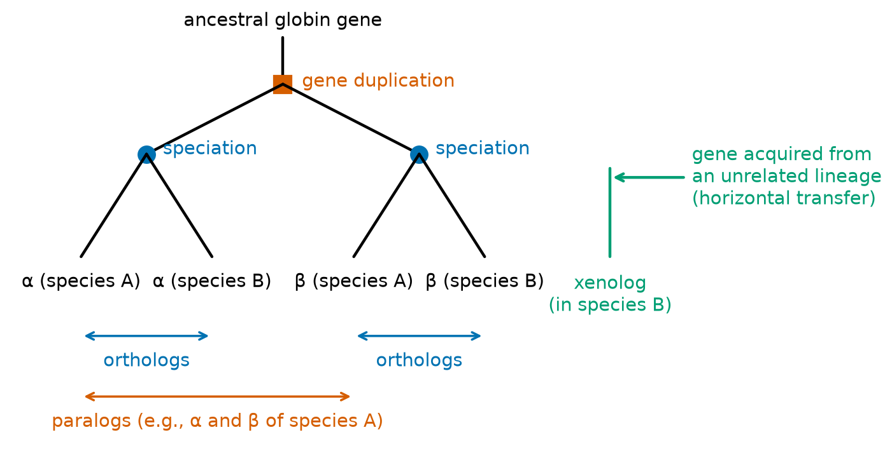
Los ortólogos son genes homólogos de especies distintas cuyo ancestro común más reciente fue un evento de especiación. La β-globina humana (HBB) y la β-globina de chimpancé son ortólogas; de hecho, la búsqueda BLAST de esta unidad encuentra que las secuencias de β-globina de chimpancé y de bonobo en Swiss-Prot (P68873 y P68872) son idénticas a la humana en los 147 residuos. Los ortólogos suelen, aunque no siempre, desempeñar la misma función en sus respectivas especies, por lo que "encontrar el ortólogo" es la estrategia estándar para transferir anotación funcional entre organismos [5].
Los parálogos son genes homólogos cuyo ancestro común más reciente fue una duplicación génica. Los genes humanos de globina son un ejemplo de manual: HBB, HBD (δ), HBG1 y HBG2 (γ, fetales) y HBE1 (ε, embrionaria) forman el cluster de β-globina en el cromosoma 11, mientras que HBA1, HBA2 y HBZ (ζ) forman el cluster de α-globina en el cromosoma 16; todos ellos, y la mioglobina, surgieron de duplicaciones de un gen ancestral de globina [2]. Los parálogos quedan libres para divergir en función después de la duplicación: la mioglobina almacena oxígeno en el músculo como monómero, mientras que la α- y la β-globina se ensamblan en el tetrámero de hemoglobina, y las cadenas embrionarias y fetales difieren de las adultas en su afinidad por el oxígeno. Por eso, inferir la función a partir de un parálogo es más arriesgado que inferirla a partir de un ortólogo.
Las duplicaciones que ocurren después de un evento de especiación dado producen in-parálogos (parálogos dentro de un linaje, relativos a esa especiación), mientras que las duplicaciones que precedieron a la especiación producen out-parálogos [6]. La distinción es relativa a la comparación que se hace: al comparar humano con chimpancé, HBG1 y HBG2 son in-parálogos solo si su duplicación ocurrió después de la separación humano–chimpancé, y out-parálogos en caso contrario. Los in-parálogos son colectivamente "co-ortólogos" del gen único de la otra especie, lo que complica la asignación automatizada de ortólogos.
Los xenólogos son homólogos cuya relación implica transferencia génica horizontal (lateral): un gen pasó de un linaje a otro y divergió allí [5]. La transferencia horizontal es frecuente entre bacterias (los genes de resistencia a antibióticos en plásmidos son el ejemplo clínicamente más visible) y puede hacer que un gen bacteriano parezca más similar a genes de un filo lejano que a los de su propio género, una de las razones por las que un único mejor hit de BLAST es una base débil para la asignación taxonómica.
Conexión clínica: ortólogos y modelos animales
La pertinencia de un modelo animal descansa en la ortología: un blanco farmacológico se estudia en roedores solo después de confirmar que el gen del roedor es el verdadero ortólogo del blanco humano y que los residuos del sitio de unión están conservados. Cuando una familia se ha expandido por duplicación en un linaje (las enzimas citocromo P450 son un caso clásico), las enzimas de roedor y humanas pueden no ser ortólogos uno a uno, y el metabolismo en el animal puede no predecir el metabolismo en los pacientes.
Tipos de alineamientos
Un alineamiento puede clasificarse según cuántas secuencias contiene, qué parte de cada secuencia debe cubrir y si se permiten gaps (Figura 2).
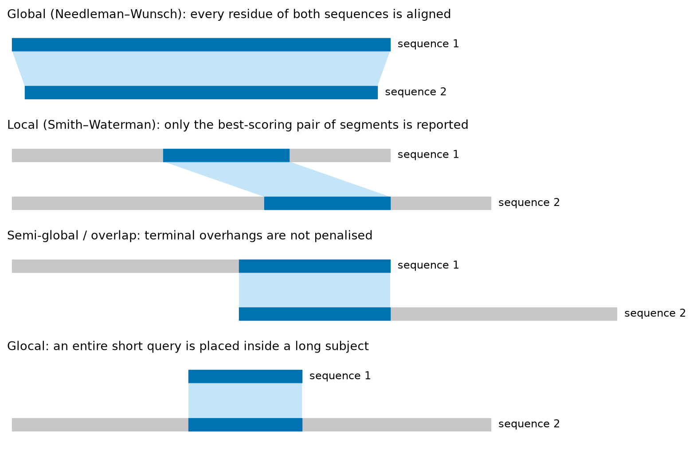
- El alineamiento global alinea las secuencias de extremo a extremo. Es adecuado cuando se espera que ambas secuencias sean homólogas en toda su longitud, como la β- y la δ-globina humanas, que tienen la misma longitud (147 residuos incluida la metionina iniciadora) y difieren en solo 10 posiciones. El algoritmo clásico es el de Needleman y Wunsch [7].
- El alineamiento local encuentra el par de segmentos, uno de cada secuencia, con la mayor puntuación, e ignora el resto. Es adecuado cuando solo una parte de las secuencias está relacionada: un dominio compartido en dos proteínas multidominio, un fragmento de gen dentro de un genoma, o secuencias de parentesco lejano en las que solo el núcleo sigue siendo reconocible. El algoritmo clásico es el de Smith y Waterman [8], y BLAST informa alineamientos locales.
- El alineamiento semiglobal (también llamado de solapamiento o "end-gap-free") es un alineamiento global en el que no se penalizan los gaps al comienzo o al final de cualquiera de las secuencias. Se usa para ensamblar reads que se solapan (Unidad 2) y para alinear secuencias de distinta longitud que son homólogas donde se solapan.
- El alineamiento glocal es el caso especial en que una secuencia debe alinearse por completo y la otra solo localmente. Mapear un read de secuenciación corto sobre un cromosoma de referencia, o alinear un cebador con un molde, son problemas glocales.
- Sin gaps frente a con gaps: un alineamiento sin gaps solo permite sustituciones (los dos segmentos se deslizan uno junto al otro sin inserciones). Es rápido y cuenta con una teoría estadística completa (Sección 4.2), y BLAST lo usa como paso intermedio; sin embargo, las secuencias homólogas reales suelen diferir también por inserciones y deleciones, por lo que los alineamientos finales tienen gaps.
- De pares frente a múltiple: esta unidad trata dos secuencias a la vez. Alinear muchas secuencias simultáneamente (alineamiento múltiple de secuencias, MSA) es computacionalmente mucho más difícil y es el tema de la Unidad 4B.
Ideas clave hasta aquí
- La homología es una inferencia evolutiva (sí o no); la identidad y la similitud son mediciones sobre un alineamiento (porcentajes).
- Los ortólogos se separan por especiación, los parálogos por duplicación y los xenólogos mediante transferencia horizontal; los in-/out-parálogos se definen respecto de una especiación dada.
- Alineamiento global para secuencias relacionadas de extremo a extremo; local para regiones compartidas; semiglobal y glocal para solapamientos y para secuencias cortas dentro de otras largas.
Sistemas de puntuación
La puntuación de un alineamiento se construye de forma aditiva: cada columna recibe una puntuación y la puntuación del alineamiento es su suma. Un par de residuos alineados se puntúa con una puntuación de sustitución s(a, b), y un residuo frente a un gap con una penalización por gap. La aditividad supone que las posiciones evolucionan de forma independiente, lo que no es estrictamente cierto (los residuos en contacto coevolucionan), pero hace tratable la optimización y funciona bien en la práctica.
Puntuación por identidad y por match/mismatch
El esquema más simple da +1 a las identidades y 0 en otro caso, de modo que la puntuación cuenta identidades. Un esquema más rico premia las coincidencias (matches) y penaliza las no coincidencias (mismatches) (por ejemplo +1/−1; en BLAST+ 2.17.0 la tarea megablast usa +1/−2 y la tarea blastn +2/−3, como se imprime al final de sus informes). Las penalizaciones estrictas por mismatch favorecen secuencias casi idénticas; las suaves, secuencias más divergentes.
Transiciones y transversiones
No todas las sustituciones de nucleótidos son igualmente probables. Las transiciones intercambian una purina por una purina (A↔G) o una pirimidina por una pirimidina (C↔T); las transversiones intercambian una purina por una pirimidina o viceversa. Hay cuatro transiciones posibles y ocho transversiones posibles, de modo que si las sustituciones ocurrieran al azar las transversiones serían el doble de comunes. En secuencias reales se observa lo contrario. En las secuencias codificantes de la β- y la δ-globina humanas (RefSeq NM_000518.5 y NM_000519.4, 444 nucleótidos cada una, que se alinean sin gaps) contamos 32 diferencias: 21 transiciones y 11 transversiones. De los 27 codones que difieren, 17 difieren de forma sinónima (mismo aminoácido), y 18 de las 32 diferencias de nucleótidos se ubican en terceras posiciones de codón, que es exactamente el patrón esperado cuando la selección actúa sobre la proteína. Un esquema de puntuación puede codificar este conocimiento penalizando las transiciones menos que las transversiones.
Puntuaciones log-odds: el principio detrás de toda matriz de sustitución
En las proteínas, los 20 aminoácidos difieren ampliamente en tamaño, carga e hidrofobicidad, y algunas sustituciones (isoleucina por valina) son aceptadas por la evolución con mucha más frecuencia que otras (triptófano por glicina). La forma moderna de convertir este conocimiento en números es la puntuación log-odds, que compara dos hipótesis sobre un par alineado de residuos a y b:
- la hipótesis de homología: a y b están alineados porque descienden del mismo residuo ancestral, en cuyo caso el par aparece con la frecuencia objetivo qab observada en alineamientos fiables de proteínas relacionadas;
- la hipótesis aleatoria: a y b están alineados por azar, en cuyo caso el par aparece con probabilidad papb, el producto de sus frecuencias de fondo.
Una puntuación positiva significa que el par se observa en homólogos con más frecuencia que por azar; una negativa, con menos frecuencia. Como los logaritmos convierten productos en sumas, la puntuación de un alineamiento sin gaps es el logaritmo del cociente de verosimilitudes del alineamiento completo bajo las dos hipótesis. Altschul mostró que toda matriz de sustitución corresponde implícitamente a un conjunto de frecuencias objetivo, de modo que elegir una matriz equivale a elegir una distancia evolutiva supuesta [9]. De ello se siguen dos consecuencias: la puntuación esperada de un par aleatorio, Σ papbs(a, b), debe ser negativa para que el alineamiento local funcione, y los residuos raros que se conservan (triptófano, cisteína) reciben grandes puntuaciones diagonales positivas.
Pruébalo tú mismo — lee puntuaciones de dos matrices estándar
Biopython incluye las matrices estándar. El programa siguiente imprime algunas entradas de BLOSUM62 y PAM250.
from Bio.Align import substitution_matrices
b62 = substitution_matrices.load("BLOSUM62")
p250 = substitution_matrices.load("PAM250")
for a, b in [("W", "W"), ("C", "C"), ("A", "A"), ("I", "V"), ("D", "E"), ("W", "G")]:
print(f"{a}-{b}: BLOSUM62 = {b62[a][b]:+.0f} PAM250 = {p250[a][b]:+.0f}")Observa que el triptófano y la cisteína tienen las mayores puntuaciones diagonales, que los intercambios conservativos (I–V, D–E) puntúan positivamente y que W–G es negativo en ambas. Los valores absolutos difieren porque PAM250 se expresa en décimas de unidad de log10 (convención de Dayhoff) y BLOSUM62 en medios bits; solo importa el patrón relativo.
Matrices de sustitución I: la serie PAM
Las primeras matrices log-odds de uso amplio fueron derivadas por Margaret Dayhoff y colaboradores a partir de familias de proteínas cuyos miembros estaban muy estrechamente relacionados [10]. La derivación tiene cuatro pasos, y comprenderlos explica tanto las fortalezas como las limitaciones de las matrices PAM.
Paso 1: contar las mutaciones puntuales aceptadas
Dayhoff alineó secuencias que eran al menos 85% idénticas, de modo que cada diferencia observada pudiera atribuirse con seguridad a una única sustitución, construyó árboles filogenéticos para cada familia y contó cuántas veces cada aminoácido había sido reemplazado por cada uno de los otros aminoácidos a lo largo de las ramas. Una sustitución observada en una proteína que sobrevive es una mutación puntual aceptada (PAM, del inglés accepted point mutation): una mutación que no fue eliminada por la selección natural. Para hacerte una idea de la materia prima, compara la β- y la δ-globina humanas, que son 93.2% idénticas en nuestro alineamiento. Difieren exactamente en diez posiciones (numeración de UniProt): S10T, T13N, E23A, T51S, A87S, T88Q, H117R, H118N, P126Q y V127M. Varias de ellas son conservativas (S10T y T51S, serina↔treonina) y ninguna involucra a las histidinas de contacto con el hemo: exactamente el sesgo que una matriz de sustitución debe capturar.
Paso 2: normalizar a una mutación aceptada por cada cien residuos
Los conteos se convierten en una matriz de probabilidades de mutación M, en la que Mij es la probabilidad de que el aminoácido i sea reemplazado por el aminoácido j durante un intervalo evolutivo definido. El intervalo se elige de modo que, en promedio, cambie el 1% de los residuos; esta matriz se llama PAM1, y una unidad PAM es la distancia evolutiva a la que ocurre una mutación puntual aceptada por cada 100 residuos. La Tabla 1 muestra un extracto de una matriz PAM1 calculada para este documento a partir de la matriz de tasas de Dayhoff tal como se distribuye con el software PAML [11][12] (detalles en el recuadro Pruébalo tú mismo más abajo).
| A | S | D | E | V | W | |
|---|---|---|---|---|---|---|
| A | 9867.0 | 28.2 | — | — | — | — |
| D | — | — | — | 56.4 | — | — |
| E | — | — | 53.4 | — | 2.4 | — |
| W | — | — | — | — | — | 9976.0 |
Lee la tabla así: durante un PAM de evolución, una alanina sigue siendo alanina con probabilidad 0.9867 y se convierte en serina con probabilidad 0.00282; el aspartato se convierte en glutamato con probabilidad 0.00564; el glutamato se convierte en valina —la sustitución falciforme— con probabilidad de solo 0.00024, más de veinte veces menos a menudo que en aspartato. El triptófano es el residuo más conservado (0.9976 retenido), mientras que la asparagina es el menos conservado (0.9822). Las entradas diagonales son altas porque PAM1 representa una distancia evolutiva muy corta. La Figura 3 (izquierda) muestra las 380 entradas fuera de la diagonal.
Paso 3: extrapolar a distancias mayores mediante multiplicación de matrices
Dayhoff supuso que la evolución se comporta como una cadena de Markov: la probabilidad de que un residuo cambie durante el siguiente intervalo depende solo de su identidad actual, no de su historia. Bajo este supuesto, las probabilidades de sustitución después de n unidades PAM se obtienen multiplicando PAM1 por sí misma n veces:
Elevar la matriz a potencias considera automáticamente las sustituciones múltiples en un mismo sitio (A→S→T), las retromutaciones (A→S→A) y los cambios paralelos, eventos invisibles cuando simplemente se comparan dos secuencias. Esta es la clave de la distinción entre diferencia observada y distancia evolutiva.
Paso 4: convertir las probabilidades en puntuaciones log-odds
Finalmente, cada probabilidad se divide por la frecuencia de fondo del aminoácido de reemplazo y se convierte en una puntuación log-odds; Dayhoff usó diez veces el logaritmo en base 10, redondeado a enteros:
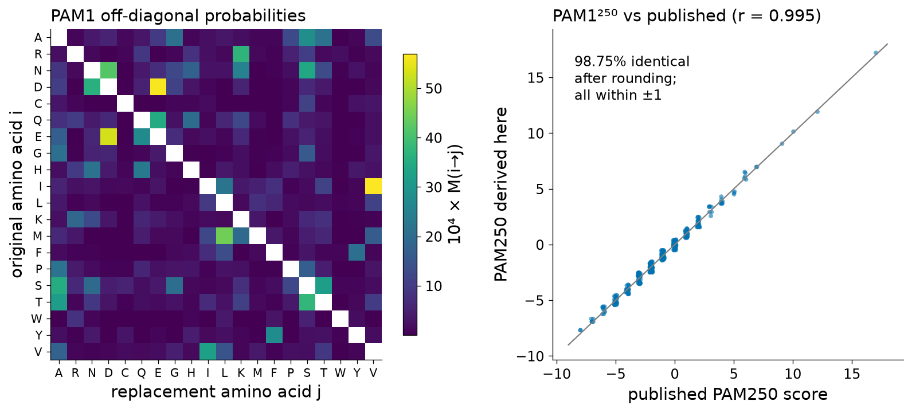
Realizamos el procedimiento completo para este documento. A partir de las intercambiabilidades y las frecuencias de aminoácidos de Dayhoff, construimos PAM1, la elevamos a la potencia 250 y convertimos el resultado en puntuaciones. La PAM250 resultante reproduce la matriz publicada casi a la perfección (Figura 3, derecha): el 98.75% de las 400 entradas son idénticas tras el redondeo y ninguna difiere en más de una unidad; por ejemplo, W–W = 17 y C–C = 12 en ambas.
Pruébalo tú mismo — calcula PAM250 a partir de PAM1
El programa descarga los datos de tasas de Dayhoff distribuidos con PAML, encuentra el intervalo de tiempo que produce un 1% de cambio esperado (PAM1), eleva PAM1 a las potencias 80 y 250 e informa la diferencia porcentual esperada y dos puntuaciones diagonales de la PAM250 derivada.
import urllib.request, numpy as np
from scipy.linalg import expm
from scipy.optimize import brentq
url = "https://raw.githubusercontent.com/abacus-gene/paml/master/dat/dayhoff.dat"
lines = urllib.request.urlopen(url).read().decode().split("\n")
S = np.zeros((20, 20)) # exchangeabilities (lower triangle in file)
for i in range(1, 20):
for j, v in enumerate(lines[i].split()):
S[i, j] = S[j, i] = float(v)
pi = np.array([float(x) for x in " ".join(lines[21:24]).split()]); pi /= pi.sum()
Q = S * pi[None, :]; np.fill_diagonal(Q, -Q.sum(1)) # instantaneous rate matrix
t1 = brentq(lambda t: 1 - (pi * np.diag(expm(Q * t))).sum() - 0.01, 1e-6, 1)
PAM1 = expm(Q * t1) # 1% expected change
for n in (1, 80, 250):
Pn = np.linalg.matrix_power(PAM1, n)
print(f"PAM{n}: expected difference = {100 * (1 - (pi * Pn.diagonal()).sum()):.1f}%")
AA = "ARNDCQEGHILKMFPSTWYV"
P250 = np.linalg.matrix_power(PAM1, 250)
score = np.round(10 * np.log10(P250 / pi[None, :])).astype(int)
print("PAM250 W-W =", score[AA.index("W"), AA.index("W")], " C-C =", score[AA.index("C"), AA.index("C")])Diferencia porcentual frente a distancia PAM
¿Cuán diferentes son dos secuencias separadas por n unidades PAM? La fracción esperada de posiciones que difieren es 1 − Σi piM(n)ii, que calculamos para cada n hasta 500 (Figura 4). A distancias cortas ambas cantidades coinciden (PAM1 da un 1.0% de diferencia, PAM10 un 9.4%), pero la curva pronto se dobla: PAM80 corresponde a un 50.1% de diferencia observada, PAM120 a un 62.1%, PAM250 a un 80.4% (es decir, alrededor de 20% de identidad) y PAM500 todavía solo a un 89.8%. La razón es que, a distancias largas, muchos sitios han cambiado más de una vez y algunos han revertido, de modo que la diferencia observada se satura. Nunca llega al 100%, porque incluso dos secuencias aleatorias comparten residuos idénticos por azar.
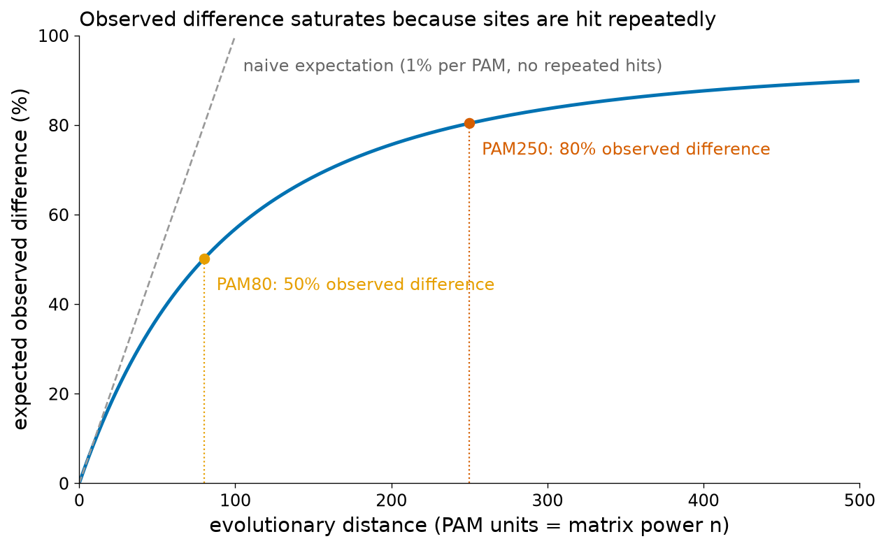
Para mayor rigor: PAM como proceso de Markov en tiempo continuo
Las implementaciones modernas escriben el proceso de sustitución como una matriz de tasas Q (con Qij = Sijπj para i ≠ j y filas que suman cero), de modo que las probabilidades de transición después de un tiempo t son P(t) = eQt, la exponencial de matriz. PAM1 es P(t1) con t1 elegido de modo que 1 − Σ πiPii(t1) = 0.01, y P(nt1) = P(t1)n, razón por la cual elevar a potencias y exponenciar coinciden. Si el modelo es reversible en el tiempo (πiPij = πjPji), la matriz log-odds log[Pij(t)/πj] es simétrica. La misma matemática subyace a los modelos evolutivos usados para construir árboles filogenéticos en la Unidad 4B, y matrices posteriores como JTT [13] y la de Gonnet y colaboradores [14] reestimaron los conteos a partir de conjuntos de datos mucho mayores.
PAM tiene limitaciones conocidas: los conteos originales provenían de un conjunto pequeño de familias estrechamente relacionadas, por lo que los intercambios raros se estimaron mal; el modelo de Markov ignora la variación de tasas entre sitios; y PAM250 es una extrapolación de observaciones a corta distancia y no una medición sobre secuencias divergentes. Estas limitaciones motivaron BLOSUM.
Matrices de sustitución II: la serie BLOSUM
En 1992 Steven y Jorja Henikoff propusieron una estrategia diferente: en lugar de extrapolar a partir de secuencias estrechamente relacionadas, contar las sustituciones directamente en regiones conservadas de proteínas de parentesco lejano [15]. Su materia prima fue la base de datos BLOCKS, una colección de alineamientos múltiples sin gaps de los segmentos más conservados de familias de proteínas [16]. Como los bloques no contienen gaps, cada columna es un conjunto de residuos que son homólogos de forma fiable, y las sustituciones pueden contarse sin construir árboles. Las matrices resultantes se llaman BLOSUM (BLOcks SUbstitution Matrix).
La derivación
- Agrupar. Dentro de cada bloque, las secuencias que son al menos X% idénticas entre sí se agrupan en clusters (enlace simple: una secuencia se une a un cluster si es ≥ X% idéntica a cualquiera de sus miembros). Luego cada cluster se trata como una sola secuencia cuyos conteos de residuos se promedian. El agrupamiento impide que las familias con muchos miembros casi idénticos dominen la estadística. El umbral X da nombre a la matriz: BLOSUM62 se construye con X = 62%, BLOSUM80 con 80%, BLOSUM45 con 45%.
- Contar pares. Para cada columna se cuenta cada par de residuos tomados de clusters distintos, ponderando cada par por 1/(n1n2), donde n1 y n2 son los tamaños de los dos clusters. Los conteos ponderados fab se suman sobre todas las columnas y todos los bloques.
- Convertir a frecuencias. Las frecuencias de pares observadas son qab = fab/Σf; la frecuencia de fondo de cada residuo es pa = qaa + Σb≠a qab/2; la frecuencia esperada por azar es eaa = pa2 para pares idénticos y eab = 2papb para residuos distintos (el factor 2 se debe a que a–b y b–a se cuentan juntos).
- Tomar log-odds. s(a, b) = round[2 · log2(qab/eab)], es decir, unidades de medio bit.
Observa la inversión de la lógica de nombres respecto de PAM: un número BLOSUM mayor significa una matriz construida a partir de secuencias más similares (adecuada para parientes cercanos), mientras que un número PAM mayor significa una distancia evolutiva más larga. En contenido de información (definido en la subsección siguiente), BLOSUM62 corresponde a una distancia evolutiva bastante larga: su entropía relativa en nuestro cálculo (0.56 bits) se sitúa entre las de las matrices PAM160 (0.69 bits) y PAM200 (0.51 bits) que derivamos de PAM1 (los valores de PAM se calcularon con las frecuencias del modelo de Dayhoff, por lo que la comparación es aproximada).
Un cálculo BLOSUM resuelto sobre un bloque real
Para ver el procedimiento en acción extrajimos un bloque real pequeño. Las ocho globinas del caso transversal (HBB, HBD, HBG1, HBE1, HBA1, HBZ y MB humanas, y la leghemoglobina A de soya) se alinearon con MAFFT [17], y tomamos las 14 columnas sin gaps que rodean la histidina distal de la hélice E, que en la β-globina corresponden a los residuos 59–72 (PKVKAHGKKVLGAF):
Con un umbral del 62%, las cuatro cadenas de tipo β (HBB, HBD, HBG1 y HBE1, que son 79–100% idénticas dentro del bloque) colapsan en un solo cluster, y las otras cuatro secuencias quedan como singletons: cinco clusters, diez pares de clusters por columna y un peso total de pares de 14 × 10 = 140. Las puntuaciones resultantes se muestran en la Figura 5 (izquierda). La histidina invariante puntúa +8 (H–H), los intercambios conservativos se premian (K–R +4, L–V +4, F–L +4) y A–V recibe −5. El bloque es demasiado pequeño para producir una matriz utilizable —algunas puntuaciones positivas inesperadas, como E–P = +6, solo reflejan un único par observado—, pero cada número se obtuvo exactamente con la aritmética que Henikoff y Henikoff aplicaron a más de 2000 bloques [15].
Pruébalo tú mismo — una matriz BLOSUM de juguete
import math, itertools
from collections import defaultdict
block = { # 14 ungapped columns around the distal histidine (E7), from a MAFFT alignment
"HBB_HUMAN":"PKVKAHGKKVLGAF", "HBD_HUMAN":"PKVKAHGKKVLGAF", "HBG1_HUMAN":"PKVKAHGKKVLTSL",
"HBE_HUMAN":"PKVKAHGKKVLTSF", "HBA_HUMAN":"AQVKGHGKKVADAL", "HBAZ_HUMAN":"AQLRAHGSKVVAAV",
"MYG_HUMAN":"EDLKKHGATVLTAL", "LGB3_SOYBN":"PKLTGHAEKLFALV"}
def identity(a, b): return sum(x == y for x, y in zip(a, b)) / len(a)
# 1) cluster sequences >= 62% identical (single linkage)
names = list(block); parent = {n: n for n in names}
def root(n):
while parent[n] != n: n = parent[n]
return n
for a, b in itertools.combinations(names, 2):
if identity(block[a], block[b]) >= 0.62: parent[root(a)] = root(b)
clusters = defaultdict(list)
for n in names: clusters[root(n)].append(n)
clusters = list(clusters.values()); print("clusters:", [len(c) for c in clusters])
# 2) count weighted pairs between clusters, column by column
f = defaultdict(float)
for col in range(14):
for c1, c2 in itertools.combinations(clusters, 2):
w = 1 / (len(c1) * len(c2))
for s1 in c1:
for s2 in c2:
f[tuple(sorted((block[s1][col], block[s2][col])))] += w
total = sum(f.values()); q = {k: v / total for k, v in f.items()}
p = defaultdict(float) # background from the pairs themselves
for (a, b), v in q.items():
p[a] += v if a == b else v / 2; p[b] += 0 if a == b else v / 2
def s(a, b):
a, b = sorted((a, b)); e = p[a] ** 2 if a == b else 2 * p[a] * p[b]
return round(2 * math.log2(q[(a, b)] / e))
print("total pair weight:", total)
print("s(H,H) =", s("H", "H"), " s(K,R) =", s("K", "R"), " s(L,V) =", s("L", "V"), " s(A,V) =", s("A", "V"))Cambia el umbral de 0.62 a 1.01 (sin agrupamiento) y observa cómo las cuatro secuencias de tipo β aportan entonces muchos más pares, inflando el peso de lo que es esencialmente una sola secuencia.
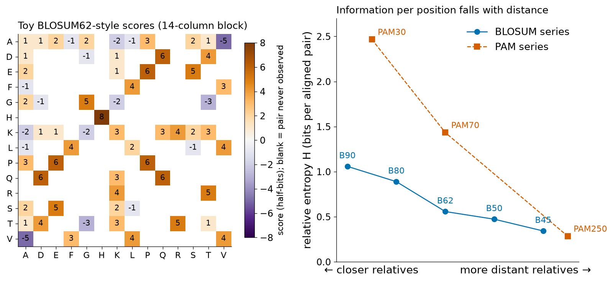
Una nota histórica: en 2008 Styczynski y colaboradores descubrieron que la BLOSUM62 usada por BLAST durante dieciséis años se había calculado con un error de software, y que la matriz "correcta" tenía un desempeño ligeramente peor en las búsquedas [18]: una matriz de sustitución es una herramienta optimizada empíricamente, no una ley de la naturaleza.
Entropía relativa y elección de la matriz
¿Cuánto nos dice sobre la homología un par de residuos alineados? Altschul respondió con la entropía relativa de la matriz, la puntuación media por par alineado en alineamientos homólogos verdaderos, expresada en bits [9]:
Calculamos H para ocho matrices estándar, usando como fondo la composición de Swiss-Prot (209,017,843 residuos; la leucina es el aminoácido más frecuente, con 9.65%, y el triptófano el más raro, con 1.11%) (Figura 5, derecha). Los valores fueron 1.06 bits para BLOSUM90, 0.89 para BLOSUM80, 0.56 para BLOSUM62, 0.47 para BLOSUM50 y 0.34 para BLOSUM45; y 2.47 bits para PAM30, 1.43 para PAM70 y 0.28 para PAM250. (Los valores publicados difieren ligeramente porque cada matriz se evaluó originalmente con sus propias frecuencias de fondo.)
El significado práctico es directo. Para distinguir un alineamiento real del azar se necesita una puntuación total mínima que depende del tamaño de la búsqueda. Para las búsquedas en Swiss-Prot de esta unidad, un E-value de 0.001 requiere unos 42 bits (Sección 4.2). Con PAM30 (2.47 bits por posición) un segmento homólogo de unos 17 residuos alcanza ese nivel, pero solo si las secuencias son realmente parientes cercanos; BLOSUM62 necesita unas 76 posiciones alineadas y BLOSUM45 (0.34 bits por posición) unas 124, pero las relaciones lejanas que PAM30 puntuaría negativamente se vuelven detectables. De ahí la regla: las matrices para distancias cortas son mejores para secuencias cortas o estrechamente relacionadas; las matrices para distancias largas son mejores para secuencias largas y divergentes. Por eso NCBI BLAST ofrece PAM30 y PAM70 para consultas de péptidos cortos y usa BLOSUM62 —un buen compromiso— como opción predeterminada general.
| Situación | Matriz sugerida | Razón |
|---|---|---|
| Consultas cortas (< 30 residuos), p. ej. péptidos, epítopos | PAM30 o PAM70 | La alta información por posición compensa el escaso número de posiciones |
| Búsquedas generales, divergencia desconocida | BLOSUM62 | Opción predeterminada robusta; ajustada con benchmarks de búsqueda en bases de datos |
| Secuencias estrechamente relacionadas, p. ej. cepas, alelos | BLOSUM80 o BLOSUM90 | Penaliza más las sustituciones y favorece coincidencias casi idénticas |
| Consultas largas, homólogos lejanos | BLOSUM45 o BLOSUM50 | Tolera sustituciones; necesita alineamientos largos para alcanzar significancia |
Penalizaciones por gap
Las inserciones y deleciones (indels) aparecen como gaps, y el sistema de puntuación debe penalizarlas; de lo contrario, el alineamiento óptimo insertaría gaps libremente para juntar residuos idénticos. Hay tres modelos de uso común (Figura 6).
- Penalización lineal: un gap de longitud k cuesta γ(k) = −d·k. Cada posición con gap se penaliza de forma independiente. Este modelo es el más simple matemáticamente y se usa en los ejemplos resueltos a mano de la Sección 4.2, pero es biológicamente poco realista: un único evento de indel de diez residuos es mucho más probable que diez indels independientes de un residuo.
- Penalización afín: γ(k) = −(o + e·k), con un costo grande de apertura del gap o y un costo pequeño de extensión e (algunos programas escriben −(o + e·(k − 1)), por lo que los valores de los parámetros deben leerse siempre con la convención del programa). BLASTP usa o = 11 y e = 1 con BLOSUM62, de modo que un gap de un residuo cuesta 12 y uno de diez residuos cuesta 21; EMBOSS needle usa 10 y 0.5. Las penalizaciones afines hacen que un gap largo sea mucho más barato que varios cortos, lo que concuerda con la biología de los indels. Su implementación eficiente requiere el algoritmo de tres matrices de Gotoh, descrito en la Sección 4.2 [19].
- Las penalizaciones cóncavas (por ejemplo, logarítmicas) crecen cada vez más lentamente con la longitud del gap, lo que se ajusta aún mejor a las distribuciones empíricas de longitud de los indels, pero son computacionalmente más costosas y rara vez se usan en las herramientas estándar.
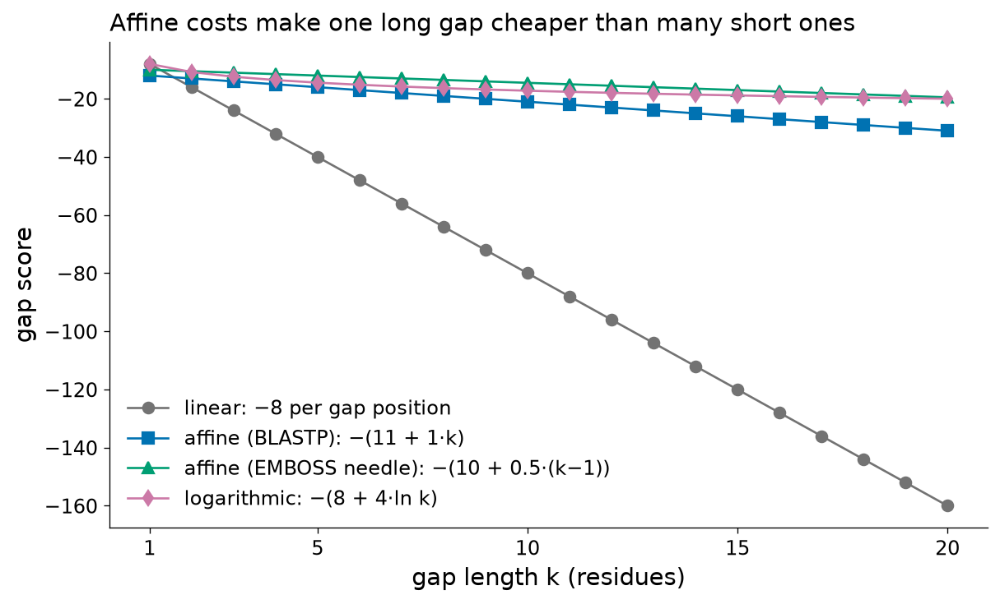
Los gaps terminales —gaps antes del primer residuo o después del último residuo de una secuencia— merecen un tratamiento especial. En un alineamiento global de una proteína completa con un fragmento, penalizar los gaps terminales obligaría al fragmento a dispersarse a lo largo de la proteína; por ello los programas a menudo puntúan los gaps terminales de forma diferente (EMBOSS needle, por ejemplo, no los penaliza por defecto), lo que convierte un alineamiento global en el alineamiento semiglobal de la Figura 2. El alineamiento local, por construcción, nunca paga por los gaps terminales.
Las penalizaciones por gap y las matrices deben elegirse juntas: un costo de gap de 11 significa algo distinto en unidades de medio bit de BLOSUM62 que en unidades de tercio de bit de BLOSUM50, y BLAST ofrece solo combinaciones para las cuales se han estimado los parámetros estadísticos (Sección 4.2). Para búsquedas de nucleótidos BLAST+ usa otros valores predeterminados: costos de gap de 5 (existencia) y 2 (extensión) para la tarea blastn, y un costo de extensión lineal de 2.5 para megablast.
Trampa: gaps ubicados en la región equivocada
Los gaps en los alineamientos de proteínas se concentran en los loops de la superficie de la proteína; las inserciones dentro de hélices α o hebras β son raras. Un alineamiento que ubica un gap en medio de una hélice conocida del plegamiento de globina debe mirarse con sospecha, aunque su puntuación sea óptima con los parámetros elegidos. Óptimo siempre significa "óptimo bajo el modelo", y el modelo es una simplificación.
Ideas clave de la Sección 4.1
- Las puntuaciones de alineamiento son sumas de puntuaciones por columna; las puntuaciones de sustitución son cocientes log-odds entre emparejamiento homólogo y aleatorio, y las penalizaciones por gap se restan.
- PAM: conteos de parientes cercanos → PAM1 (1% de cambio) → PAMn elevando la matriz a potencias bajo un modelo de Markov → log-odds. PAM250 ≈ 80% de diferencia observada.
- BLOSUM: conteos directos a partir de bloques sin gaps de parientes lejanos, tras agrupar las secuencias por encima de X% de identidad. Número BLOSUM mayor = parientes más cercanos.
- La entropía relativa mide la información por posición alineada; corta/cercana → PAM30 o BLOSUM80; general → BLOSUM62; larga/lejana → BLOSUM45.
- Las penalizaciones afines por gap (apertura + extensión) modelan los indels mejor que las lineales; la matriz y los costos de gap deben elegirse como un par.
Puente
El documento complementario de cátedra trata la puntuación de nucleótidos y desarrolla la puntuación de un alineamiento dado con una matriz de 4 × 4 (su Sección 4.7). Los perfiles y las matrices de puntuación específicas de posición, que generalizan las matrices de sustitución a una columna de un alineamiento de familia a la vez, se desarrollan en la Unidad 4B.
Sección 4.2Alineamiento de dos secuencias
Programa 4.2: «Alineamiento de dos secuencias. El algoritmo de la fuerza bruta. Matrices de puntos (dot plots). Algoritmos de programación dinámica. Alineamientos globales (Needleman-Wunsch). Alineamientos locales (Smith-Waterman). Algoritmos heurísticos: FASTA y BLAST.»
La Sección 4.1 nos explicó cómo puntuar un alineamiento; esta sección aborda cómo encontrar el mejor y cómo juzgar si significa algo, desde la enumeración exhaustiva, pasando por los dot plots y la programación dinámica, hasta las heurísticas que hacen factibles las búsquedas en bases de datos.
El algoritmo de fuerza bruta
El enfoque más directo es escribir todos los alineamientos posibles, puntuar cada uno y quedarse con el mejor. Este algoritmo de fuerza bruta garantiza un resultado correcto; la única pregunta es cuánto tarda, lo que depende de cuántos alineamientos existen.
Considera dos secuencias de longitudes n y m. Un alineamiento puede describirse como un camino a través de una cuadrícula de (n + 1) × (m + 1) puntos, que comienza en la esquina superior izquierda y termina en la esquina inferior derecha, en el que cada paso va en diagonal (alinear un residuo de cada secuencia), hacia abajo (residuo de la primera secuencia frente a un gap) o hacia la derecha (residuo de la segunda secuencia frente a un gap). El número de tales caminos es el número de Delannoy:
Si consideramos idénticos dos alineamientos que emparejan los mismos residuos (de modo que el orden de los gaps adyacentes en las dos secuencias no importa), el recuento es menor, pero sigue siendo enorme: Σk C(n, k) · C(m, k) = C(n + m, n), que para n = m es el coeficiente binomial central C(2n, n) ≈ 22n/√(πn). La Tabla 3 muestra ambos recuentos, calculados de forma exacta con la aritmética de enteros de Python.
| Longitudes de las secuencias | Alineamientos distintos C(n+m, n) | Todos los caminos de la cuadrícula D(n, m) |
|---|---|---|
| 3 × 3 | 20 | 63 |
| 8 × 7 (el ejemplo resuelto más abajo) | 6,435 | 108,545 |
| 10 × 10 | 184,756 | 8,097,453 |
| 147 × 142 (HBB × HBA1) | ≈ 1085.7 | ≈ 10109.3 |
| 300 × 300 | ≈ 10179.1 | ≈ 10228.2 |
Para la β-globina y la α-globina humanas, dos proteínas cortas, hay unos 10109 caminos en la cuadrícula. Un computador que puntuara mil millones de alineamientos por segundo necesitaría unos 1084 miles de millones de años para enumerarlos (mil millones de años contienen 3.2 × 1016 segundos). Por lo tanto, la fuerza bruta no es un algoritmo que se pueda usar; es la referencia que muestra por qué una estrategia más inteligente es indispensable (Figura 7). Esa estrategia más inteligente, la programación dinámica, resuelve exactamente el mismo problema llenando solo (n + 1)(m + 1) celdas: 148 × 143 = 21,164 celdas para HBB × HBA1.
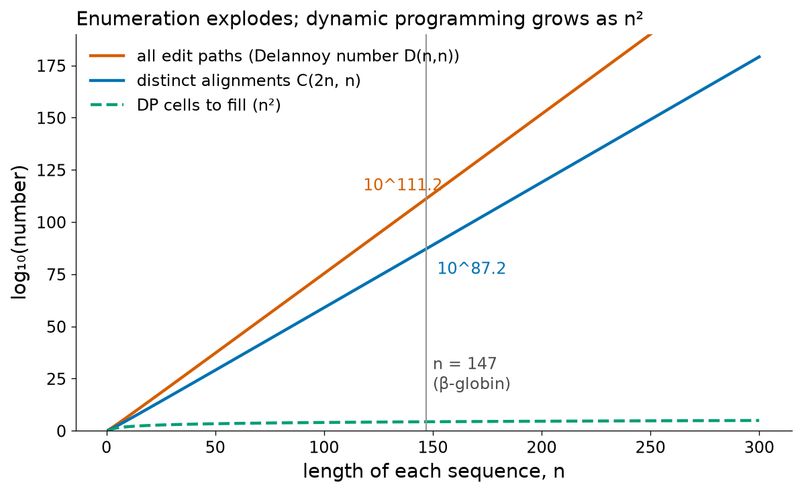
Dot plots (matrices de puntos)
Antes de que los computadores pudieran alinear secuencias de forma rutinaria, la manera más informativa de comparar dos secuencias era visual. En un dot plot (matriz de puntos), una secuencia se escribe a lo largo del eje horizontal y la otra a lo largo del eje vertical, y se coloca un punto en la celda (i, j) cada vez que el residuo i de la primera secuencia coincide con el residuo j de la segunda [20]. Las regiones de similitud aparecen entonces como líneas diagonales, porque residuos coincidentes consecutivos producen puntos consecutivos a lo largo de una diagonal. Un dot plot no produce directamente un alineamiento, pero muestra todas las regiones de similitud a la vez, incluidas aquellas que un único alineamiento óptimo ocultaría.
Ruido, ventanas y astringencia
Con coincidencias de un solo residuo, un dot plot de proteínas está dominado por el ruido: con la composición de aminoácidos de Swiss-Prot, la probabilidad de que dos residuos aleatorios sean idénticos es Σpa2 = 0.060, de modo que aproximadamente 1 de cada 17 celdas contiene una coincidencia al azar; para un ADN con composición de bases equilibrada, la cifra es 1 de cada 4. Maizel y Lenk introdujeron el filtro estándar [21]: una ventana de w residuos se desliza a lo largo de cada diagonal, y se dibuja un punto en el centro de la ventana solo si el número de coincidencias (o la suma de las puntuaciones de sustitución) dentro de la ventana alcanza un umbral de astringencia s. Las coincidencias aisladas al azar se eliminan, mientras que los tramos de similitud se conservan.
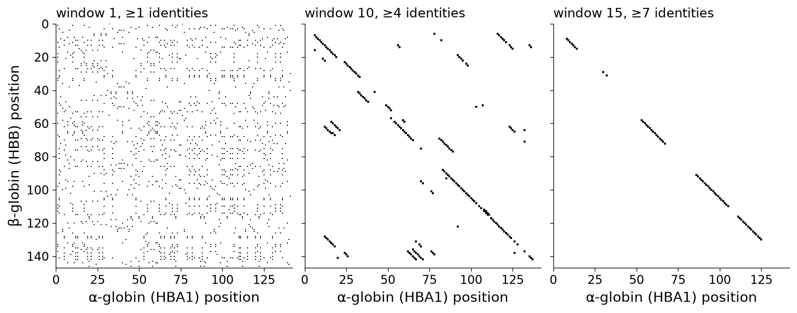
La Figura 8 ilustra este compromiso con la β-globina y la α-globina humanas. Sin filtrado (izquierda), la homología es invisible entre 1,541 puntos debidos al azar. Con una ventana de 10 y astringencia 4 (centro), la diagonal principal emerge con claridad, junto con unos pocos segmentos cortos espurios; con una ventana de 15 y astringencia 7 (derecha) casi solo queda la diagonal verdadera, pero esta se interrumpe dondequiera que la similitud local disminuye. La regla general es: ventanas grandes y alta astringencia para secuencias lejanamente emparentadas o largas, ventanas pequeñas para secuencias estrechamente emparentadas o para localizar elementos exactos cortos. La ventana y la astringencia son siempre un compromiso entre ruido (puntos falsos) y sensibilidad (segmentos no detectados).
Cómo leer un dot plot
- Una diagonal principal continua indica similitud a lo largo de toda la longitud (homología global).
- Una diagonal desplazada lateralmente o fragmentada en segmentos desfasados indica una inserción o deleción en una de las secuencias: la diagonal salta a una línea paralela, y el tamaño del salto es la longitud del indel.
- Las diagonales paralelas en una autocomparación (una secuencia frente a sí misma) revelan repeticiones internas. La Figura 9 (izquierda) compara la poliubiquitina-C humana (UBC, P0CG48; 685 residuos) consigo misma: la secuencia contiene nueve copias exactas de la ubiquitina de 76 residuos, por lo que el gráfico muestra la diagonal principal más ocho diagonales paralelas a cada lado, separadas por 76 residuos.
- En el ADN, las repeticiones invertidas y las regiones palindrómicas (por ejemplo, las horquillas de los terminadores de la transcripción) aparecen como diagonales perpendiculares a la dirección principal cuando la secuencia se compara con su complemento reverso.
- Los segmentos cortos aislados alejados de la diagonal pueden ser regiones de baja complejidad (Sección 4.3) o deberse al azar.
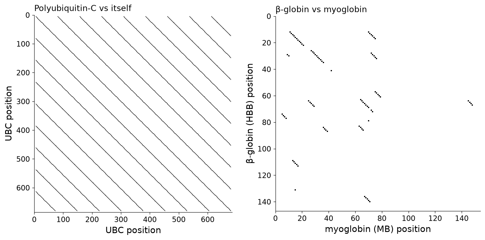
Los dot plots siguen usándose para comparar regiones genómicas largas (por ejemplo, para visualizar reordenamientos entre genomas) y para inspeccionar repeticiones. Su limitación se muestra en la Figura 9 (derecha): con aproximadamente un 25% de identidad, la homología entre la β-globina y la mioglobina aparece solo como unos pocos segmentos cortos. Detectar tales relaciones requiere matrices de sustitución y un algoritmo de optimización.
Pruébalo tú mismo: un dot plot en unas pocas líneas de NumPy
import urllib.request, numpy as np
from io import StringIO
from Bio import SeqIO
def uniprot(acc):
txt = urllib.request.urlopen(f"https://rest.uniprot.org/uniprotkb/{acc}.fasta").read().decode()
return str(SeqIO.read(StringIO(txt), "fasta").seq)
def dotplot(a, b, window, stringency):
A, B = np.array(list(a)), np.array(list(b))
match = (A[:, None] == B[None, :]).astype(int)
n, m = len(a) - window + 1, len(b) - window + 1
score = sum(match[k:k + n, k:k + m] for k in range(window)) # identities along diagonals
return score >= stringency
hbb, hba = uniprot("P68871"), uniprot("P69905")
for w, s in [(1, 1), (10, 4), (15, 7)]:
print(f"window {w:2d}, stringency {s}: {dotplot(hbb, hba, w, s).sum()} dots")En la web, dotmatcher y dottup de EMBOSS (EBI Job Dispatcher) producen dot plots con ventana y umbral ajustables. Grafica dotplot(hbb, hba, 10, 4) con matplotlib.pyplot.imshow para reproducir el panel central de la Figura 8.
Algoritmos de programación dinámica
La programación dinámica es una estrategia general, formalizada por Richard Bellman en la década de 1950, para problemas cuya solución óptima puede ensamblarse a partir de las soluciones óptimas de subproblemas más pequeños. El alineamiento de secuencias tiene esta propiedad. Considera el mejor alineamiento de los primeros i residuos de la secuencia x con los primeros j residuos de la secuencia y, y observa su última columna. Solo hay tres posibilidades:
- xi está alineado con yj: el resto del alineamiento debe ser un alineamiento óptimo de x1..i−1 con y1..j−1;
- xi está alineado con un gap: el resto debe ser un alineamiento óptimo de x1..i−1 con y1..j;
- yj está alineado con un gap: el resto debe ser un alineamiento óptimo de x1..i con y1..j−1.
Si el resto no fuera óptimo, podríamos reemplazarlo por uno mejor y mejorar el alineamiento completo, lo que es una contradicción. Por lo tanto, la mejor puntuación F(i, j) puede calcularse a partir de tres valores calculados previamente, y la puntuación del alineamiento completo, F(n, m), se obtiene llenando una tabla fila por fila. El número de alineamientos es astronómico, pero estos comparten subalineamientos; la programación dinámica evalúa cada subproblema compartido una sola vez. Ese es todo el truco.
Todo algoritmo de alineamiento por programación dinámica tiene tres fases: inicialización de la primera fila y la primera columna, recursión (llenar cada celda a partir de sus vecinas registrando cuál dio el máximo) y traceback (trazado inverso: seguir los punteros hacia atrás desde la celda final para recuperar el alineamiento).
Alineamiento global: el algoritmo de Needleman–Wunsch
Needleman y Wunsch publicaron en 1970 el primer método de programación dinámica para comparar secuencias de proteínas [7]. En su forma moderna, con una penalización lineal por gap d, el algoritmo es:
F(i, j) = max { F(i−1, j−1) + s(xi, yj), F(i−1, j) − d, F(i, j−1) − d } donde s(xi, yj) es la puntuación de sustitución de los dos residuos y d > 0 el costo de una posición de gap. La puntuación global óptima es F(n, m).
La primera fila y la primera columna representan alinear un prefijo de una secuencia completamente frente a gaps, por lo que disminuyen en d en cada paso.
Ejemplo resuelto: los extremos N-terminales de la β-globina y la α-globina
Alineamos los primeros residuos tras la metionina iniciadora de la β-globina humana, x = VHLTPEEK (P68871, residuos 2–9), con los de la α-globina humana, y = VLSPADK (P69905, residuos 2–8), usando BLOSUM62 y una penalización lineal por gap d = 8. La matriz completa es la Tabla 4; deberías ser capaz de reproducir cada celda.
| – | V | L | S | P | A | D | K | |
|---|---|---|---|---|---|---|---|---|
| – | 0 | -8 | -16 | -24 | -32 | -40 | -48 | -56 |
| V | -8 | 4 | -4 | -12 | -20 | -28 | -36 | -44 |
| H | -16 | -4 | 1 | -5 | -13 | -21 | -29 | -37 |
| L | -24 | -12 | 0 | -1 | -8 | -14 | -22 | -30 |
| T | -32 | -20 | -8 | 1 | -2 | -8 | -15 | -23 |
| P | -40 | -28 | -16 | -7 | 8 | 0 | -8 | -16 |
| E | -48 | -36 | -24 | -15 | 0 | 7 | 2 | -6 |
| E | -56 | -44 | -32 | -23 | -8 | -1 | 9 | 3 |
| K | -64 | -52 | -40 | -31 | -16 | -9 | 1 | 14 |
Inicialización. La fila 0 y la columna 0 valen 0, −8, −16, … porque alinear k residuos frente a gaps cuesta 8k.
Algunas celdas en detalle.
- F(1, 1), V frente a V: diagonal 0 + s(V,V) = 0 + 4 = 4; desde arriba −8 − 8 = −16; desde la izquierda −8 − 8 = −16. Máximo 4, desde la diagonal.
- F(2, 1), H frente a V: diagonal F(1,0) + s(H,V) = −8 − 3 = −11; desde arriba F(1,1) − 8 = 4 − 8 = −4; desde la izquierda F(2,0) − 8 = −16 − 8 = −24. Máximo −4, desde arriba: H queda frente a un gap.
- F(2, 2), H frente a L: diagonal F(1,1) + s(H,L) = 4 − 3 = 1; desde arriba F(1,2) − 8 = −4 − 8 = −12; desde la izquierda F(2,1) − 8 = −12. Máximo 1.
- F(5, 4), P frente a P: diagonal F(4,3) + s(P,P) = 1 + 7 = 8; desde arriba −2 − 8 = −10; desde la izquierda −7 − 8 = −15. Máximo 8.
- F(8, 7), K frente a K: diagonal F(7,6) + s(K,K) = 9 + 5 = 14; desde arriba 3 − 8 = −5; desde la izquierda 1 − 8 = −7. La puntuación global óptima es 14.
Traceback. Partiendo de F(8, 7) y siguiendo en cada celda el movimiento que produjo su valor, pasamos por las celdas sombreadas hasta F(0, 0). Cada movimiento diagonal emite un par alineado, y el único movimiento vertical, de F(2, 1) a F(1, 1), emite H frente a un gap. Leer los movimientos de principio a fin da el alineamiento:
Biológicamente, este es un resultado satisfactorio: el gap corresponde al hecho de que la cadena α madura es un residuo más corta en su extremo N-terminal que la cadena β, y el mismo gap aparece en los alineamientos de longitud completa que se obtienen más adelante en esta unidad.
Pruébalo tú mismo: verifica el cálculo a mano con Biopython
from Bio import Align
from Bio.Align import substitution_matrices
aligner = Align.PairwiseAligner(mode="global",
substitution_matrix=substitution_matrices.load("BLOSUM62"),
open_gap_score=-8, extend_gap_score=-8) # linear gap, d = 8
alns = aligner.align("VHLTPEEK", "VLSPADK") # HBB 2-9 vs HBA1 2-8
print("score =", alns.score, "| optimal alignments:", len(alns))
print(alns[0])El PairwiseAligner de Biopython [22] informa la misma puntuación (14), determina que el alineamiento óptimo es único y lo imprime en su propia notación: «|» identidad, «.» no coincidencia, «-» gap. Sus parámetros open_gap_score y extend_gap_score, fijados ambos en −8, reproducen una penalización lineal.
Error frecuente: empates y múltiples alineamientos óptimos
Cuando dos o tres movimientos dan el mismo máximo, existen varios alineamientos óptimos con puntuaciones idénticas. Los programas resuelven los empates con una regla fija (por ejemplo, preferir la diagonal) y normalmente imprimen un solo alineamiento. En Biopython, len(alignments) indica cuántos alineamientos co-óptimos existen. Por lo tanto, dos programas distintos pueden informar alineamientos diferentes, e igualmente óptimos, del mismo par.
Alineamiento local: el algoritmo de Smith–Waterman
Smith y Waterman modificaron la recursión en 1981 para que encontrara el mejor alineamiento local [8]. Bastan tres cambios:
H(i, j) = max { 0, H(i−1, j−1) + s(xi, yj), H(i−1, j) − d, H(i, j−1) − d } La puntuación local óptima es el valor máximo en cualquier lugar de la matriz; el traceback comienza en esa celda y se detiene al llegar a una celda con valor 0.
- La primera fila y la primera columna son cero: un alineamiento puede comenzar en cualquier lugar sin pagar por los residuos omitidos.
- Se añade una cuarta opción, 0, al máximo: cada vez que la puntuación acumulada de un alineamiento candidato se volvería negativa, este se abandona y puede comenzar un alineamiento nuevo.
- El traceback comienza en la celda más alta de la matriz, no en la esquina, y se detiene en el primer cero.
La opción 0 solo tiene sentido si la puntuación esperada de pares aleatorios es negativa (Sección 4.1); de lo contrario, H crecería a lo largo de cualquier diagonal y el alineamiento «local» se volvería global.
Ejemplo resuelto: un segmento de β-globina frente a mioglobina
Alineamos x = YPWTQRFF (residuos 36–43 de la β-globina, la región C–D) con y = GHPETLEKFDKF (residuos 36–47 de la mioglobina) usando BLOSUM62 y una penalización lineal por gap d = 6.
| – | G | H | P | E | T | L | E | K | F | D | K | F | |
|---|---|---|---|---|---|---|---|---|---|---|---|---|---|
| – | 0 | 0 | 0 | 0 | 0 | 0 | 0 | 0 | 0 | 0 | 0 | 0 | 0 |
| Y | 0 | 0 | 2 | 0 | 0 | 0 | 0 | 0 | 0 | 3 | 0 | 0 | 3 |
| P | 0 | 0 | 0 | 9 | 3 | 0 | 0 | 0 | 0 | 0 | 2 | 0 | 0 |
| W | 0 | 0 | 0 | 3 | 6 | 1 | 0 | 0 | 0 | 1 | 0 | 0 | 1 |
| T | 0 | 0 | 0 | 0 | 2 | 11 | 5 | 0 | 0 | 0 | 0 | 0 | 0 |
| Q | 0 | 0 | 0 | 0 | 2 | 5 | 9 | 7 | 1 | 0 | 0 | 1 | 0 |
| R | 0 | 0 | 0 | 0 | 0 | 1 | 3 | 9 | 9 | 3 | 0 | 2 | 0 |
| F | 0 | 0 | 0 | 0 | 0 | 0 | 1 | 3 | 6 | 15 | 9 | 3 | 8 |
| F | 0 | 0 | 0 | 0 | 0 | 0 | 0 | 0 | 0 | 12 | 12 | 6 | 9 |
Algunas celdas en detalle.
- H(1, 2), Y frente a H: diagonal 0 + s(Y,H) = 2; las demás opciones son negativas, por lo que H(1, 2) = 2.
- H(2, 3), P frente a P: diagonal H(1,2) + s(P,P) = 2 + 7 = 9.
- H(4, 5), T frente a T: diagonal H(3,4) + 5 = 6 + 5 = 11; desde arriba 1 − 6 = −5; desde la izquierda 2 − 6 = −4. H(4, 5) = 11.
- H(4, 6), T frente a L: diagonal H(3,5) + s(T,L) = 1 − 1 = 0; desde arriba 0 − 6 = −6; desde la izquierda H(4,5) − 6 = 11 − 6 = 5. Máximo 5, desde la izquierda: la L de la mioglobina queda frente a un gap.
- H(7, 9), F frente a F: diagonal H(6,8) + 6 = 9 + 6 = 15, el máximo de toda la matriz.
- Muchas celdas valen 0 porque todas las alternativas serían negativas; por ejemplo, H(1, 1), Y frente a G, sería −3 y se fija en 0.
Traceback desde H(7, 9) = 15, a través de las celdas sombreadas, hasta H(1, 2), la primera celda del alineamiento (su predecesora diagonal es un cero):
El alineamiento local ignora el primer residuo del segmento de mioglobina y los últimos residuos de ambos segmentos, que solo reducirían la puntuación, y acepta un gap porque la ganancia de los pares Q–E, R–K y F–F que le siguen (+10) supera su costo (−6). Con d = 8 la puntuación bajaría a 13, con el mismo alineamiento; con una penalización menos severa (d = 4) el mismo alineamiento puntúa 17. Cambiar los parámetros cambia las puntuaciones y, a veces, los alineamientos: una de las razones por las que los parámetros deben informarse siempre.
Pruébalo tú mismo: alineamiento local con Biopython
from Bio import Align
from Bio.Align import substitution_matrices
aligner = Align.PairwiseAligner(mode="local",
substitution_matrix=substitution_matrices.load("BLOSUM62"),
open_gap_score=-6, extend_gap_score=-6)
alns = aligner.align("YPWTQRFF", "GHPETLEKFDKF") # HBB 36-43 vs MB 36-47
print("score =", alns.score, "| optimal alignments:", len(alns))
print(alns[0])Biopython numera las posiciones desde 0, de modo que «query 1 … 9» corresponde a las posiciones 2–9 del segmento de mioglobina, es decir, a los residuos 37–44 de la proteína.
Puente
El documento complementario desarrolla ejemplos de ADN de ambos algoritmos con el esquema de puntuación unitario y con coincidencia +3/no coincidencia −3 (sus Secciones 5 y 6). Resolver a mano un ejemplo de ADN y uno de proteínas es la mejor preparación para las pruebas escritas.
Penalizaciones afines por gap: el algoritmo de Gotoh
Con una penalización lineal por gap, cada celda solo necesita a sus tres vecinas. Con una penalización afín γ(k) = −(o + e·k), el costo de extender un gap depende de si ya hay un gap abierto, información que un único número por celda no puede almacenar. Una solución ingenua examina todas las longitudes de gap posibles que terminan en cada celda y tiene un costo en tiempo proporcional a n3. Gotoh demostró en 1982 que tres matrices restituyen el tiempo de ejecución n2 [19]:
Ix(i, j) = max { M(i−1, j) − (o + e), Ix(i−1, j) − e }
Iy(i, j) = max { M(i, j−1) − (o + e), Iy(i, j−1) − e } donde M(i, j) es la mejor puntuación de un alineamiento de x1..i e y1..j que termina con xi alineado con yj; Ix la mejor puntuación que termina con xi frente a un gap; Iy la mejor puntuación que termina con yj frente a un gap. Abrir un gap (viniendo de M) cuesta o + e; extenderlo (permaneciendo en I) cuesta solo e.
Las tres matrices son los tres estados de una pequeña máquina («alineando residuos», «en un gap en y», «en un gap en x»), una visión que conduce a los modelos ocultos de Markov de pares (pair HMM) del alineamiento probabilístico. Para el alineamiento local, se añade 0 a las opciones de M. needle y water de EMBOSS, el PairwiseAligner de Biopython y la extensión con gaps dentro de BLAST usan todos penalizaciones afines calculadas de esta manera.
Aplicados a las secuencias completas, los algoritmos dan los resultados resumidos en la Figura 10 y la Tabla 6. Con BLOSUM62 y penalizaciones afines de 10 (apertura) y 0.5 (extensión), el alineamiento global de la β-globina (147 residuos) con la α-globina (142 residuos) puntúa 292.5 y contiene 149 columnas, 65 identidades (43.6%), 90 pares similares (60.4%) y 9 columnas con gap. Con una penalización lineal de 8 por posición, el mismo par puntúa 264, y el alineamiento local de la β-globina con la mioglobina puntúa 117 y cubre casi la totalidad de ambas proteínas (Figura 10, derecha), lo que recuerda que, para proteínas verdaderamente homólogas, el óptimo local puede extenderse casi de extremo a extremo.
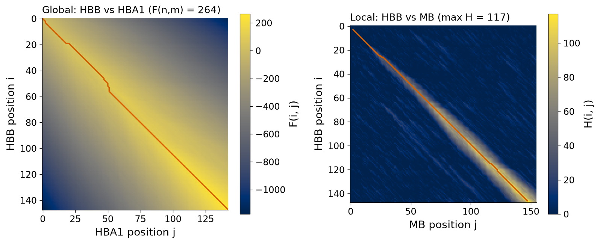
| Comparada con | Longitud | Puntuación global | Identidad global | Similitud global | Puntuación local | Identidad local (columnas) |
|---|---|---|---|---|---|---|
| δ-globina HBD (P02042) | 147 | 727.0 | 93.2% (137/147) | 96.6% | 727 | 93.2% (147) |
| ε-globina HBE1 (P02100) | 147 | 607.0 | 75.5% (111/147) | 88.4% | 607 | 75.5% (147) |
| γ1-globina HBG1 (P69891) | 147 | 584.0 | 72.8% (107/147) | 85.7% | 584 | 72.8% (147) |
| α-globina HBA1 (P69905) | 142 | 292.5 | 43.6% (65/149) | 60.4% | 288 | 43.4% (145) |
| ζ-globina HBZ (P02008) | 142 | 243.0 | 35.6% (53/149) | 56.4% | 244 | 35.9% (145) |
| mioglobina MB (P02144) | 154 | 92.0 | 24.5% (38/155) | 37.4% | 111 | 25.5% (145) |
| leghemoglobina A de soya (P02238) | 144 | 63.0 | 20.5% (32/156) | 38.5% | 65 | 24.2% (91) |
Complejidad en tiempo y en espacio
Para secuencias de longitudes n y m, Needleman–Wunsch, Smith–Waterman y Gotoh llenan O(nm) celdas, cada una en tiempo constante: el tiempo de ejecución es O(nm), cuadrático en lugar de exponencial. Almacenar la matriz para el traceback también requiere memoria O(nm): algo trivial para dos globinas (unas 21,000 celdas), pero 2.5 × 1013 celdas para dos genomas bacterianos de 5 megabases. La idea de divide y vencerás de Hirschberg, adaptada a gaps afines por Myers y Miller, recupera el alineamiento óptimo con memoria O(n + m) a costa de aproximadamente el doble de cómputo [23][24]; si solo se necesita la puntuación, bastan dos filas; y el alineamiento en banda (banded) calcula solo las celdas cercanas a la diagonal cuando se sabe que las secuencias son similares.
El tiempo cuadrático es excelente para un par, pero se convierte en el cuello de botella en la búsqueda en bases de datos: comparar una consulta de 147 residuos con los 209 millones de residuos de Swiss-Prot mediante Smith–Waterman requiere unas 3 × 1010 actualizaciones de celda por consulta. Los métodos heurísticos sacrifican una pérdida de sensibilidad pequeña y controlada a cambio de grandes ganancias en velocidad.
Significancia estadística de un alineamiento: la prueba de barajado
La programación dinámica siempre devuelve un alineamiento óptimo, incluso para secuencias no relacionadas, y la puntuación depende de las longitudes, de las composiciones y del sistema de puntuación. La forma más antigua de calibrar una puntuación es la prueba de barajado (shuffling, aleatorización):
- Alinea las dos secuencias reales y registra la puntuación óptima Sreal.
- Permuta (baraja) al azar los residuos de una de las secuencias muchas veces; cada secuencia barajada tiene exactamente la misma longitud y composición de aminoácidos, pero se destruye cualquier señal que dependa del orden (evolutiva).
- Alinea la primera secuencia con cada versión barajada y registra las puntuaciones óptimas; estas forman la distribución nula: las puntuaciones esperadas por azar.
- Expresa Sreal en relación con la distribución nula, ya sea como un z-score, z = (Sreal − media)/DE, o como la fracción de puntuaciones barajadas al menos igual de grandes (un P-value empírico).
Aplicamos la prueba a la β-globina frente a tres homólogos, con BLOSUM62, gaps afines 11/1, alineamiento de Smith–Waterman y 1,000 barajados para cada uno (Figura 11). Para la mioglobina, la puntuación real es 111, mientras que las puntuaciones barajadas tienen una media de 29.2, una desviación estándar de 5.1 y un máximo de 60: z = 16.0. Para la leghemoglobina de soya, el homólogo más distante, la puntuación real es 65 frente a una media barajada de 27.5 (DE 4.5, máximo 57): z = 8.3, todavía claramente separada. Para la α-globina, el z-score es 53.3. Ninguna de las 1,000 secuencias barajadas alcanzó la puntuación real en ninguno de los tres casos, de modo que el P-value empírico es inferior a 1/1,001.
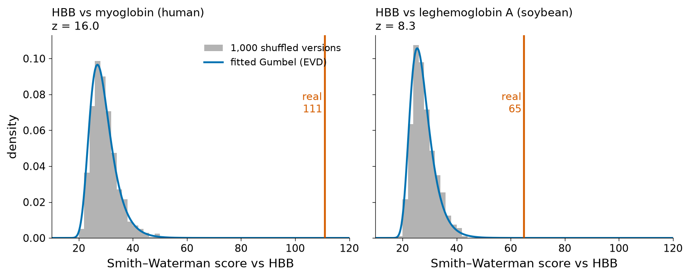
La distribución nula es asimétrica hacia la derecha: la puntuación óptima es el máximo sobre un número enorme de alineamientos locales posibles, y los máximos de muchas variables aleatorias siguen una distribución de valores extremos (Gumbel), no una normal. Ajustar una distribución de Gumbel a las puntuaciones barajadas da una ubicación μ = 26.9 y una escala β = 3.81 para la mioglobina; la probabilidad ajustada de una puntuación al azar ≥ 111 es 2.7 × 10−10, y para la leghemoglobina la probabilidad de ≥ 65 es 1.2 × 10−5. Como los z-scores suponen normalidad, subestiman la probabilidad de puntuaciones altas debidas al azar: úsalos para ordenar, no para obtener P-values. El comportamiento de Gumbel también puede predecirse teóricamente, como se muestra más abajo.
Pruébalo tú mismo: una prueba de barajado
import urllib.request, random
from io import StringIO
from Bio import Align, SeqIO
from Bio.Align import substitution_matrices
def uniprot(acc):
txt = urllib.request.urlopen(f"https://rest.uniprot.org/uniprotkb/{acc}.fasta").read().decode()
return str(SeqIO.read(StringIO(txt), "fasta").seq)
al = Align.PairwiseAligner(mode="local", substitution_matrix=substitution_matrices.load("BLOSUM62"),
open_gap_score=-11, extend_gap_score=-1)
hbb, mb = uniprot("P68871"), uniprot("P02144")
real = al.score(hbb, mb)
random.seed(1); letters = list(mb); null = []
for _ in range(500):
random.shuffle(letters); null.append(al.score(hbb, "".join(letters)))
mean = sum(null) / len(null); sd = (sum((x - mean) ** 2 for x in null) / (len(null) - 1)) ** 0.5
print(f"real score {real:.0f}; shuffled mean {mean:.1f} (sd {sd:.1f}); max {max(null):.0f}; z = {(real - mean) / sd:.1f}")Con 500 barajados y un generador aleatorio distinto, los números difieren ligeramente de los del texto (1,000 barajados), pero la conclusión es idéntica. Prueba a barajar con random.seed(2) para ver cuánto varían las estimaciones de la media y del máximo.
Algoritmos heurísticos I: FASTA
Un algoritmo heurístico usa reglas empíricas para encontrar rápidamente una buena solución, sin garantía de optimalidad. La búsqueda heurística de similitud se basa en una observación empírica: los alineamientos de homólogos casi siempre contienen al menos un tramo corto de residuos idénticos o de alta puntuación. Buscar primero esos tramos mediante consultas rápidas a tablas, e invertir esfuerzo de programación dinámica solo en torno a ellos, descarta casi instantáneamente la mayor parte de la base de datos.
FASTA, desarrollado por David Lipman y William Pearson (FASTP para proteínas en 1985, FASTA en 1988), fue el primer programa ampliamente usado construido sobre esta idea [25][26]. (El formato de archivo FASTA, usado en toda la bioinformática, debe su nombre a este programa). Procede en cuatro pasos:
- Encontrar coincidencias de k-tuplas. Todas las palabras idénticas de longitud k (ktup; típicamente 2 para proteínas y 6 para ADN) compartidas por la consulta y la secuencia de la base de datos se localizan con una tabla de consulta (look-up table) que enumera, para cada palabra posible, sus posiciones en la consulta. Cada palabra compartida se ubica en una diagonal i − j de la matriz de puntos.
- Puntuar diagonales (init1). Las palabras de una misma diagonal y cercanas entre sí se unen en regiones diagonales, y las diez mejores regiones se vuelven a puntuar con una matriz de sustitución (PAM250 o BLOSUM50). La mejor región individual da la puntuación init1.
- Unir regiones (initn). Las regiones compatibles de diagonales cercanas se combinan en un único alineamiento con gaps, restando una penalización por unión; la mejor combinación da initn. Las secuencias de la base de datos con initn bajo se descartan.
- Optimizar (opt). Para las secuencias que sobreviven se calcula un alineamiento de Smith–Waterman dentro de una banda estrecha en torno a la mejor diagonal, lo que da la puntuación opt, que se usa para la clasificación final y la estadística.
FASTA estima la significancia ajustando una distribución de valores extremos a las puntuaciones opt de las secuencias de la base de datos (en su mayoría no relacionadas), usando la propia base de datos como fuente de secuencias aleatorias. El paquete FASTA aún se mantiene, a menudo es más sensible que BLAST en casos difíciles e incluye el programa de búsqueda exacta de Smith–Waterman SSEARCH [1].
Algoritmos heurísticos II: BLAST
BLAST (Basic Local Alignment Search Tool), publicado en 1990 por Altschul, Gish, Miller, Myers y Lipman en el NCBI [27], se convirtió en el programa más usado en bioinformática porque combinaba velocidad con una teoría estadística rigurosa de sus puntuaciones. El algoritmo actual («gapped BLAST») se introdujo en 1997 [28] y se implementó en el paquete BLAST+ [29]. Para una consulta de proteína tiene cuatro fases.
1. Palabras y el umbral de vecindad T
La consulta se divide en todas las palabras superpuestas de longitud w (w = 3 para proteínas). A diferencia de FASTA, BLAST no exige palabras idénticas: para cada palabra de la consulta enumera todas las palabras posibles (de entre 203 = 8,000) cuya puntuación BLOSUM62 frente a la palabra de la consulta es al menos un umbral T. Esta lista es la vecindad de la palabra. La vecindad permite sustituciones conservadoras en el seed, lo que es esencial para las proteínas, mientras que T controla su tamaño. Para la palabra PWT de la β-globina (autopuntuación 23), la vecindad contiene 49 palabras con T = 11 (PWS, que puntúa 19; PWV, 18; …) y 39 con T = 13; para HGK (autopuntuación 19), 37 y 16; para LGA (autopuntuación 14), solo 5 y 1. Sobre las 145 palabras de la β-globina, las vecindades suman 2,863 palabras con T = 11, 1,008 con T = 13 y 361 con T = 15. Un T más bajo significa más seeds (más sensibilidad) y más trabajo (menos velocidad).
Pruébalo tú mismo: palabras de la vecindad
import itertools
from Bio.Align import substitution_matrices
B = substitution_matrices.load("BLOSUM62"); AA = "ARNDCQEGHILKMFPSTWYV"
def neighbourhood(word, T):
return [w for w in map("".join, itertools.product(AA, repeat=3))
if sum(B[a][b] for a, b in zip(word, w)) >= T]
for word in ["PWT", "HGK", "LGA"]:
print(word, "self-score", sum(B[c][c] for c in word),
"| T=11:", len(neighbourhood(word, 11)), "words | T=13:", len(neighbourhood(word, 13)), "words")Las palabras que contienen residuos raros y muy conservados (W) tienen autopuntuaciones altas y muchas vecinas por encima de T; las palabras de residuos comunes con puntuaciones diagonales pequeñas (A, L, G) tienen pocas o ninguna, de modo que las regiones ricas en esos residuos generan pocos seeds.
2. Rastreo y el método de dos hits
Las palabras de la vecindad se almacenan en una tabla de consulta, y cada secuencia de la base de datos se rastrea en busca de apariciones exactas de ellas. Cada aparición es un hit, ubicado en una diagonal. El BLAST original extendía cada hit. Gapped BLAST, en cambio, exige dos hits no superpuestos en la misma diagonal a una distancia no mayor que A (A = 40 residuos) antes de intentar cualquier extensión [28]. Como los alineamientos verdaderos suelen contener varios hits, mientras que los hits al azar están dispersos, esta regla de dos hits descarta la mayoría de los hits aleatorios; para compensar este disparador más estricto se reduce T (11 en lugar de 13 para BLOSUM62), lo que produce más hits por secuencia. El informe de BLAST+ confirma estos valores por defecto en su pie: «Neighboring words threshold: 11» y «Window for multiple hits: 40».
La Figura 12 (arriba) muestra lo que ve el método de dos hits en dos pares de secuencias. Entre la β-globina y la α-globina hay 93 hits de palabra con T = 11, en 50 diagonales distintas; nueve pares de hits cumplen la regla de dos hits, todos en apenas cuatro diagonales cercanas al alineamiento verdadero. Entre la β-globina y la mioglobina hay 49 hits, pero solo un par cumple la regla, y se ubica en una diagonal equivocada, donde su extensión sin gaps puntúa solo 12.
3. Extensión sin gaps con la regla X-drop
Cada seed que califica se extiende en ambas direcciones sin gaps, sumando puntuaciones de sustitución residuo a residuo. La puntuación acumulada fluctúa; la extensión se detiene cuando cae más de X por debajo del mejor valor alcanzado hasta ese momento (la regla X-drop), y el segmento se recorta hasta ese mejor punto. El alineamiento local sin gaps resultante es un par de segmentos de alta puntuación (high-scoring segment pair, HSP). La Figura 12 (abajo) sigue este proceso para un seed en el residuo 64 de la β-globina / residuo 65 de la mioglobina (palabra HGK/HGA). Extendido sin el requisito de dos hits y con X = 15, crece hasta un HSP sin gaps de puntuación 91 que abarca la mayor parte de ambas proteínas: la homología está ahí, pero el filtro de dos hits nunca permitió que BLAST la examinara.
![Arriba a la izquierda: hits de palabra entre beta y alfa globina como puntos grises, con nueve pares de dos hits dibujados como segmentos naranjas en diagonales cercanas a la diagonal principal. Arriba a la derecha: hits de palabra entre beta-globina y mioglobina, con un único par de dos hits naranja fuera de la diagonal principal y un seed encerrado en un círculo cerca de la posición 64. Abajo: puntuación acumulada sin gaps desde ese seed, que sube hacia la izquierda hasta un máximo de 91 antes de una detención por X-drop, y hacia la derecha hasta el final de la beta-globina.](figures/fig12_blast_seeding_xdrop.png)
4. Extensión con gaps y alineamiento final
Si un HSP puntúa por encima de un valor disparador, BLAST realiza un alineamiento con gaps (una programación dinámica similar a Smith–Waterman con gaps afines) a partir de un par de residuos central del HSP, de nuevo limitado por una regla X-drop para que solo se explore una pequeña región de la matriz. Los alineamientos finales se puntúan, se calcula su significancia estadística (siguiente subsección) y se listan aquellos con E-values por debajo del umbral de informe. En BLAST+, el valor por defecto para proteínas es BLOSUM62 con costos de gap 11/1, y el umbral de E-value es 10.
El precio de la velocidad: un ejemplo real
Las heurísticas sacrifican sensibilidad a cambio de velocidad, y ese intercambio no es meramente teórico. Comparamos la β-globina humana con la mioglobina humana usando BLASTP 2.17.0 con parámetros por defecto: BLAST no encontró ningún alineamiento significativo (solo un alineamiento espurio de 125 columnas con E = 13, por encima del umbral por defecto de 10). Smith–Waterman encuentra un alineamiento local de puntuación 111 para el mismo par, y la prueba de barajado muestra que está lejos de deberse al azar (z = 16). Bajar el umbral de vecindad a T = 9, o cambiar a siembra de un hit (-window_size 0), hace que BLAST informe el alineamiento esperado: 25.5% de identidad en 145 residuos, 45.4 bits, E = 1.1 × 10−11.
Pruébalo tú mismo: haz que BLAST encuentre la mioglobina
Guarda la β-globina y la mioglobina como archivos FASTA y compáralas directamente con -subject (no se necesita base de datos):
El primer comando no imprime nada: ningún alineamiento cumple E ≤ 10. El mismo experimento en el sitio web del NCBI: abre BLASTP, marca «Align two or more sequences» y, en «Algorithm parameters», cambia «Word size» o «Threshold»; o usa el programa exacto de Smith–Waterman SSEARCH del paquete FASTA en el EBI.
La lección es general: un resultado negativo de BLAST no demuestra que no exista ningún homólogo. Cuando no se encuentra una relación esperada, repite la búsqueda con parámetros más sensibles (T más bajo, BLOSUM45), con una búsqueda exacta de Smith–Waterman o con métodos basados en perfiles como PSI-BLAST (Sección 4.3) y HMMER (Unidad 4B).
Para mayor rigor: ¿por qué dos hits?
Para una secuencia aleatoria de la base de datos, el número de hits por diagonal sigue aproximadamente una distribución de Poisson con una media pequeña, de modo que la probabilidad de dos hits a una distancia no mayor que A en una diagonal escala aproximadamente con el cuadrado de la densidad de hits, mientras que en los alineamientos verdaderos los hits están agrupados. Bajar T restituye la sensibilidad, mientras que la ley cuadrática mantiene escasos los eventos aleatorios de dos hits y, con ellos, las extensiones costosas. Altschul y colaboradores informaron que gapped BLAST se ejecutaba unas tres veces más rápido que el original con una sensibilidad comparable [28].
Estadística de Karlin–Altschul: bit scores, E-values y P-values
Para alineamientos locales sin gaps de secuencias aleatorias, Karlin y Altschul demostraron en 1990 que las puntuaciones siguen una distribución de valores extremos cuyos parámetros pueden calcularse a partir de la matriz de sustitución y de las frecuencias de los residuos [30]. El resultado central es que el número esperado de HSP distintos con puntuación de al menos S, cuando una consulta de longitud m se compara con una base de datos de longitud total n, es:
Para alineamientos con gaps no existe una teoría exacta, pero las simulaciones muestran que las puntuaciones siguen teniendo la forma de valores extremos, y λ y K se han estimado para cada combinación admitida de matriz y costos de gap [31]. BLAST los imprime al final de cada informe. En nuestra búsqueda de la β-globina contra Swiss-Prot, el pie dice: sin gaps λ = 0.320, K = 0.137; con gaps (BLOSUM62, 11/1) λ = 0.267, K = 0.041. Como comprobación, resolver la ecuación que define λ con BLOSUM62 y la composición de Swiss-Prot dio 0.317 para alineamientos sin gaps; y ajustar una distribución de Gumbel a nuestras puntuaciones barajadas β-globina/mioglobina dio 1/β = 0.262, cercano al λ con gaps de 0.267, de modo que el experimento de barajado de la Figura 11 y la teoría concuerdan.
Bit scores
Las puntuaciones brutas dependen del sistema de puntuación y no pueden compararse entre búsquedas realizadas con matrices distintas. Normalizar con λ y K da el bit score:
Para el alineamiento β-globina/α-globina encontrado por BLASTP con la estadística basada en composición desactivada (-comp_based_stats 0), la puntuación bruta es 285 (286 con el ajuste composicional por defecto, como en el informe mostrado en la Sección 4.3), de modo que S′ = (0.267 × 285 − ln 0.041)/ln 2 = 114.4 bits; BLAST informa 114. Para β-globina/mioglobina (con T = 9), S = 110 da 47.0 bits, y para β-globina/leghemoglobina, S = 61 da 28.1 bits.
E-values y P-values
El E-value es el número de alineamientos con al menos esta puntuación que se esperan por azar en una búsqueda de este tamaño. E = 10−30 significa que una coincidencia al azar es prácticamente imposible; E = 1 significa que se espera un alineamiento así por azar en cada búsqueda. El número de alineamientos al azar sigue una distribución de Poisson, por lo que la probabilidad de observar al menos uno, el P-value, es:
Pruébalo tú mismo: calcula E-values a partir de puntuaciones brutas
import math
lam, K = 0.267, 0.041 # gapped BLOSUM62, gap costs 11/1 (from the BLAST report)
search_space = 5_896_512_280 # "Effective search space used" for HBB vs Swiss-Prot
for S in (285, 110, 61):
bits = (lam * S - math.log(K)) / math.log(2)
E = K * search_space * math.exp(-lam * S)
print(f"raw {S:3d} -> {bits:5.1f} bits, E = {E:.3g}, P = {1 - math.exp(-E):.3g}")Como espacio de búsqueda usamos el valor impreso en el informe de BLAST («Effective search space used: 5896512280»). Ejecutar BLAST con ese espacio de búsqueda fijo (-searchsp 5896512280 -comp_based_stats 0) reproduce exactamente E = 4.25 × 10−5 para el alineamiento con la mioglobina. Sin embargo, en una búsqueda normal en una base de datos, BLAST+ informa 4.81 × 10−6 para el mismo alineamiento, y 3.74 × 10−32 (no 2.17 × 10−25) para la α-globina: BLAST+ refina las longitudes efectivas por separado para cada secuencia de la base de datos mediante una corrección de tamaño finito, cuyos parámetros (a, alpha, sigma) se imprimen junto a λ y K [32]. La corrección importa sobre todo en alineamientos largos y de alta puntuación; la fórmula de los libros de texto es la herramienta adecuada para entender la lógica, mientras que el E-value del propio BLAST es el que se debe informar.
Los E-values dependen del tamaño de la base de datos
Como E es proporcional a n, el mismo alineamiento se vuelve menos significativo cuando la base de datos crece. Buscamos la β-globina en tres bases de datos construidas a partir de la versión 2026_03 de Swiss-Prot (solo la familia de las globinas, 1,201 secuencias y 191,004 residuos; proteínas humanas más globinas, 21,619 secuencias y 11.6 millones de residuos; y todo Swiss-Prot, 575,748 secuencias y 209 millones de residuos), con la estadística basada en composición desactivada para que solo cambiara el tamaño de la base de datos. El alineamiento con la α-globina tiene la misma puntuación bruta (285, sin ajuste composicional) y el mismo bit score (114) en las tres búsquedas, pero su E-value crece de 3.4 × 10−35 a 2.1 × 10−33 y 3.7 × 10−32. Para la leghemoglobina (28.1 bits, T = 9), el efecto decide el resultado: E = 0.022 frente a la base de datos de globinas, 1.3 frente a la de proteínas humanas más globinas, y por encima del umbral de informe de 10 (no se informa) frente a todo Swiss-Prot. La Figura 13 muestra la relación.
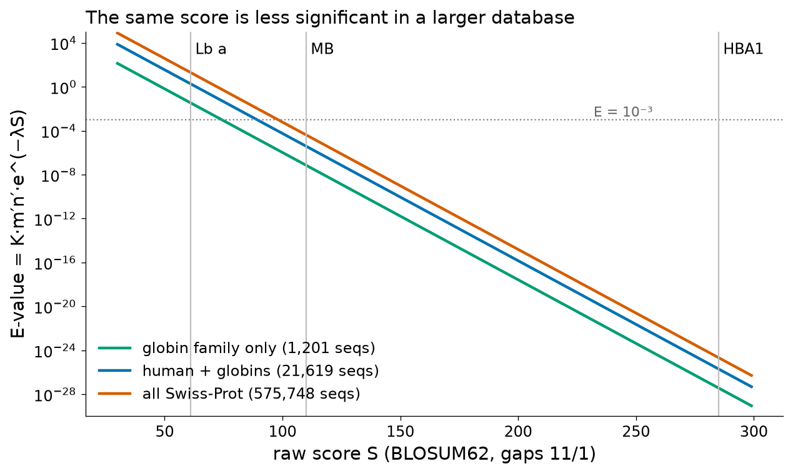
Concepciones erróneas frecuentes sobre los E-values
- Un E-value no es la probabilidad de que las dos secuencias sean homólogas. Es el número esperado de alineamientos al azar al menos igual de buenos en esta búsqueda.
- Los E-values de búsquedas en bases de datos distintas no son directamente comparables; los bit scores sí lo son.
- Un umbral convencional como E ≤ 0.001 es una regla empírica. Los homólogos verdaderos tienen con frecuencia E entre 0.001 y 10 (twilight zone), y coincidencias cortas de baja complejidad pueden ocasionalmente tener E-values pequeños pese a carecer de significado biológico.
- Los E-values muy pequeños se imprimen como 0.0 cuando caen por debajo del límite numérico; significan «extremadamente significativo», no «exactamente cero».
Ideas clave de la Sección 4.2
- La fuerza bruta es exacta pero imposible (≈10109 caminos para dos globinas); la programación dinámica es exacta y cuadrática.
- Los dot plots muestran de un vistazo todas las regiones similares, las repeticiones y los indels; la ventana y la astringencia filtran el ruido.
- Needleman–Wunsch: global; primera fila/columna −kd; traceback desde la esquina. Smith–Waterman: local; piso en cero; traceback desde el máximo hasta el primer cero. Gotoh: tres matrices para gaps afines.
- Significancia: las puntuaciones óptimas de secuencias aleatorias siguen una distribución de valores extremos; el barajado la estima empíricamente, y la teoría de Karlin–Altschul, analíticamente.
- FASTA (k-tuplas → init1 → initn → opt en banda) y BLAST (palabras de la vecindad con umbral T → dos hits a menos de 40 → X-drop sin gaps → extensión con gaps) ganan velocidad buscando solo en torno a los seeds, con un costo medible en sensibilidad.
- El bit score S′ = (λS − ln K)/ln2 es comparable entre búsquedas; E = mn2−S′ crece con el tamaño de la base de datos; P = 1 − e−E.
Puente
El documento complementario analiza la sensibilidad y la especificidad en las búsquedas heurísticas y desarrolla un ejemplo de palabras de BLAST de la clase (su Sección 7.4). Las búsquedas basadas en perfiles, que recuperan muchos homólogos que BLAST de a pares no detecta, se desarrollan en la Unidad 4B.
Sección 4.3La herramienta BLAST de NCBI
Programa de la asignatura 4.3: «La herramienta BLAST de NCBI. Variantes del programa. Análisis de los resultados.»
La Sección 4.2 explicó cómo funciona BLAST; esta sección explica cómo usarlo: la elección del programa, los parámetros, la página de resultados y las mismas búsquedas desde la línea de comandos y desde Python. Las afirmaciones sobre la interfaz web de NCBI se verificaron contra el servicio en línea el 18 de octubre de 2026; es esperable que el diseño cambie ligeramente con el tiempo.
El servicio BLAST de NCBI
El National Center for Biotechnology Information (NCBI) aloja el servicio BLAST de referencia en blast.ncbi.nlm.nih.gov [33]. La página de inicio ofrece Nucleotide BLAST, Protein BLAST, blastx y tblastn, además de servicios especializados (en nuestra visita: SmartBLAST, Primer-BLAST e IgBLAST). Un formulario de búsqueda tiene cuatro partes: Enter Query Sequence (texto FASTA o un número de acceso, opcionalmente un subintervalo), Choose Search Set (base de datos, opcionalmente restringida por organismo), Program Selection y Algorithm parameters (tras un enlace en la parte inferior). Cada búsqueda recibe un Request ID (RID) con el que los resultados pueden reabrirse durante un tiempo limitado o recuperarse mediante programas.
El mismo software se distribuye como BLAST+, un conjunto de programas de línea de comandos que pueden buscar en las bases de datos de NCBI de forma remota o en bases de datos construidas a partir de cualquier archivo FASTA [29]. Todos los resultados locales de esta unidad se obtuvieron con BLAST+ 2.17.0.
Variantes del programa
Los programas BLAST difieren en el tipo de secuencia consulta (query) y de base de datos, y en si las secuencias se traducen o no. El principio rector es comparar proteínas siempre que sea posible: para secuencias codificantes, las comparaciones de proteínas son más sensibles, porque los cambios sinónimos son invisibles, las matrices de sustitución capturan la similitud entre aminoácidos y un alfabeto de 20 letras produce menos coincidencias por azar que uno de 4 letras.
| Programa | Consulta | Base de datos | Uso típico |
|---|---|---|---|
| blastn — task megablast | nucleótidos | nucleótidos | Secuencias muy similares (misma especie o especies muy cercanas); palabra larga (28 por defecto) y extensión greedy [34]; opción por defecto en el formulario web |
| blastn — task dc-megablast | nucleótidos | nucleótidos | Comparación entre especies de regiones codificantes; plantillas de palabra discontinuas que ignoran las terceras posiciones de los codones [35] |
| blastn — task blastn | nucleótidos | nucleótidos | Secuencias de nucleótidos más divergentes; palabra corta (11); más lento |
| blastp (y QuickBLASTP) | proteína | proteína | Búsqueda estándar de proteínas; QuickBLASTP es una variante acelerada basada en k-mers para bases de datos grandes |
| blastx | nucleótidos (traducida) | proteína | Encontrar la proteína codificada por una secuencia de DNA/RNA (un transcrito, un contig, un read); identifica regiones codificantes y desplazamientos del marco de lectura (frameshifts) |
| tblastn | proteína | nucleótidos (traducida) | Encontrar genes que codifican una proteína en genomas o transcriptomas no anotados |
| tblastx | nucleótidos (traducida) | nucleótidos (traducida) | Comparar dos secuencias de nucleótidos a nivel de proteína cuando ninguna está anotada; el más costoso computacionalmente |
| PSI-BLAST | proteína | proteína | Búsqueda iterativa: los hits que superan un umbral de inclusión se usan para construir una matriz de puntuación específica de posición (PSSM) con la que se busca de nuevo, lo que permite detectar homólogos remotos [28] |
| PHI-BLAST | proteína + patrón | proteína | Restringe la búsqueda a secuencias que contienen un patrón especificado por el usuario (p. ej., un motivo del sitio activo) y que son similares en su entorno [36] |
| DELTA-BLAST | proteína | proteína | Construye la PSSM inicial a partir de perfiles de dominios conservados (CDD) antes de buscar, lo que da una sensibilidad similar a la de PSI-BLAST en un solo paso [37] |
| SmartBLAST | proteína | proteomas curados | Panorama rápido: las proteínas bien anotadas más cercanas, un pequeño alineamiento y un árbol |
Para ver las diferencias con datos reales, buscamos el mRNA de la β-globina (RefSeq NM_000518.5, 628 nucleótidos) contra una pequeña base de datos de nucleótidos que contenía otros siete mRNA de globinas humanas (HBD, HBG1, HBG2, HBE1, HBA1, HBA2 y MB; 4,639 nucleótidos en total), y la proteína o el mRNA de la β-globina contra el conjunto de proteínas correspondiente. Los resultados (Tabla 8) ilustran la escala de sensibilidad: megablast detecta solo los dos parálogos más cercanos, dc-megablast y blastn agregan las γ-globinas, blastn detecta además débilmente la α-globina (70% de identidad en 60 nucleótidos, E = 0.03), mientras que los programas a nivel de proteína detectan la α-globina con E-values del orden de 10−36. Ninguna de las ejecuciones con parámetros por defecto detectó la mioglobina, por las razones discutidas en la Sección 4.2.
| Programa (consulta → base de datos) | Secuencias sujeto encontradas (E ≤ 10) | Mejor hit de α-globina |
|---|---|---|
| megablast (mRNA → mRNA) | HBD (93.4% en 488 nt), HBE1 (78.3% en 507 nt) | no encontrada |
| dc-megablast (mRNA → mRNA) | HBD, HBE1, HBG2, HBG1 | no encontrada |
| blastn (mRNA → mRNA) | HBD, HBE1, HBG2, HBG1, HBA2, HBA1, MB (coincidencia espuria de 11 nt, E = 1.2) | 70.0% en 60 nt, E = 0.029 |
| tblastn (proteína → mRNA traducidos) | HBD, HBE1, HBG2, HBG1, HBA2, HBA1 | 43.4% en 145 aa, E = 1.1 × 10−36 |
| blastx (mRNA traducido → proteínas) | HBB, HBD, HBE1, HBG1, HBA1, HBZ y una coincidencia espuria de 6 aa con una leghemoglobina (E = 1.3) | 43.4% en 145 aa, E = 9.1 × 10−37 |
| tblastx (mRNA traducido → mRNA traducidos) | HBD, HBE1, HBG2, HBG1, HBA2, HBA1, MB (coincidencia espuria de 9 aa, E = 1.0) | 45.4% en 97 aa, E = 3.7 × 10−30 |
Error frecuente: los E-values no son comparables entre programas
Las búsquedas traducidas comparan seis marcos de lectura, y sus espacios de búsqueda efectivos difieren de los de blastn; cada programa tiene su propia estadística. Compara E-values dentro de una misma búsqueda y usa los bit scores (con cautela) entre búsquedas.
Bases de datos
La elección de la base de datos importa tanto como la del programa, porque determina qué se puede encontrar y cuán significativo es cada hit (Sección 4.2). El 18 de octubre de 2026, el formulario Protein BLAST de NCBI ofrecía, entre otras:
- ClusteredNR (
nr_cluster_seq), la base de datos de proteínas por defecto desde agosto de 2025: las secuencias de nr agrupadas con MMseqs2 en clusters de proteínas con más de 90% de identidad y dentro del 90% de la longitud del miembro más largo, cada uno representado por una secuencia bien anotada. Los resultados muestran una línea por cluster, con una cobertura taxonómica más amplia y menos redundancia. - nr (secuencias de proteínas no redundantes): traducciones de las secuencias codificantes de GenBank más RefSeq, PDB, Swiss-Prot, PIR y PRF; la más completa y la más redundante.
- refseq_select_prot y refseq_protein: proteínas de NCBI Reference Sequence (Unidad 3), curadas y no redundantes por organismo.
- swissprot: la sección revisada de UniProtKB [38], anotada manualmente y por eso preferible cuando se necesita una anotación funcional confiable. La versión de NCBI informó 487,728 secuencias en nuestra búsqueda remota, menos que las 575,748 entradas de UniProtKB/Swiss-Prot release 2026_03 que descargamos, porque NCBI construye su propia versión no redundante.
- pdb: secuencias de estructuras determinadas experimentalmente en el Protein Data Bank, usadas para encontrar moldes estructurales (Unidad 5).
- Otras: pataa (secuencias patentadas), env_nr (muestras ambientales y metagenómicas), tsa_nr (transcriptome shotgun assemblies).
El formulario Nucleotide BLAST ofrecía core_nt (por defecto desde agosto de 2024; la colección nt sin la mayoría de las secuencias de cromosomas eucariotas, menos de la mitad de su tamaño), nt, refseq_select_rna, refseq_rna, refseq_genomes, est, sra (reads crudos, buscados por experimento) y pdbnt, además de conjuntos especializados como las secuencias de rRNA 16S. Para genomas completos de un organismo, las opciones «Genomes» o las páginas BLAST específicas de cada organismo son más eficientes. Las fechas de los dos cambios de base de datos por defecto están documentadas en anuncios de NCBI listados en Recursos en línea.
Conexión clínica: la elección de la base de datos en la identificación de patógenos
Cuando un laboratorio clínico identifica un aislado a partir de su gen de rRNA 16S, una base de datos curada de 16S evita miles de secuencias ambientales casi idénticas de nt, a veces mal identificadas. Del mismo modo, la interpretación de variantes compara las secuencias del paciente con el transcrito RefSeq del gen (para la β-globina, NM_000518.5), de modo que las coordenadas y la nomenclatura no sean ambiguas.
Parámetros clave
Los valores por defecto son razonables para la mayoría de las búsquedas, pero un usuario competente sabe qué hace cada parámetro:
- Expect threshold (
-evalue, por defecto 10): solo se informan los alineamientos con E menor que este valor. Redúcelo (0.001) para conservar solo hits convincentes; súbelo cuando busques homólogos débiles. - Max target sequences (
-max_target_seqs; 500 por defecto en BLAST+, 100 en el formulario web): el número de secuencias de la base de datos que se informan. Nuestra búsqueda local en Swiss-Prot con la configuración por defecto encontró 917 secuencias con E ≤ 10; un límite de 500 habría ocultado las 417 más débiles, incluidas todas las globinas que no son hemoglobinas. - Word size (
-word_size): blastp de BLAST+ usa w = 3; el formulario de proteínas de NCBI ofrecía 2, 3, 5 y 6, con 5 preseleccionado en nuestra visita. Para nucleótidos, blastn usa 11 y megablast 28 (el formulario web ofrecía de 16 a 64); dc-megablast usa 11 dentro de una plantilla discontinua de 18 posiciones, según consta en la estrategia de búsqueda exportada por BLAST+. Las palabras más largas son más rápidas pero menos sensibles. - Umbral de vecindario T (
-threshold, 11 para BLOSUM62 en blastp): los valores más bajos aumentan la sensibilidad (Sección 4.2). - Matrix (
-matrix): BLOSUM62 por defecto; el formulario web ofrece además PAM30, PAM70, PAM250, BLOSUM80, BLOSUM90, BLOSUM45 y BLOSUM50. Para consultas muy cortas, NCBI ajusta automáticamente la matriz y el tamaño de palabra. - Gap costs (
-gapopen,-gapextend): para cada matriz solo se permiten combinaciones con estadística precalculada (11/1 para BLOSUM62). - Filtros y enmascaramiento: las regiones de baja complejidad (sección «Errores frecuentes») se enmascaran con SEG en proteínas [39] y DUST en nucleótidos [40]; los residuos enmascarados se muestran como minúsculas o como X/N y no generan seeds de alineamientos. En BLAST+ 2.17.0, SEG está desactivado por defecto en blastp (
-seg no), mientras que DUST está activado en blastn (-dust '20 64 1'); el formulario web también enmascara, a petición, las repeticiones humanas («Species-specific repeats») en consultas de nucleótidos. - Ajuste composicional (
-comp_based_stats, por defecto 2): ajusta las puntuaciones o la matriz para consultas y secuencias sujeto con una composición de aminoácidos inusual, que de otro modo producen puntuaciones infladas y E-values engañosos [41][42]. Por eso los E-values de nuestras ejecuciones por defecto difieren ligeramente de los obtenidos con-comp_based_stats 0. - Restricciones por organismo o Entrez: limitan la búsqueda a un taxón (p. ej., «Homo sapiens (taxid:9606)») o excluyen uno (útil para encontrar homólogos fuera de tu propia especie). Restringir la base de datos también reduce n y, por lo tanto, los E-values.
Análisis de los resultados: cómo leer un informe de BLAST
Una página de resultados de BLAST en el sitio web de NCBI se organiza en pestañas: Descriptions, Graphic Summary, Alignments y Taxonomy. Sobre ellas, un encabezado resume la búsqueda: el Request ID, el programa y la base de datos, la consulta (con su longitud y un enlace a sus dominios conservados) y, bajo «Search summary», los parámetros efectivamente usados. Lee primero el encabezado: muchos resultados desconcertantes se explican por una base de datos o un parámetro inesperados.
Resumen gráfico
El resumen gráfico dibuja la consulta como una regla y cada hit como una barra situada bajo la parte de la consulta con la que se alinea, coloreada según la puntuación del alineamiento en bits (negro < 40, azul 40–50, verde 50–80, magenta 80–200, rojo ≥ 200). También muestra los dominios conservados detectados en la consulta. La Figura 14 reproduce esta visualización para hits representativos de nuestra búsqueda local en Swiss-Prot. Vale la pena reconocer tres patrones: barras de longitud completa (homología a lo largo de toda la consulta), barras que cubren solo una región (un dominio compartido o un fragmento en la base de datos) y pilas de barras cortas en un mismo lugar (a menudo una región de baja complejidad o repetida).
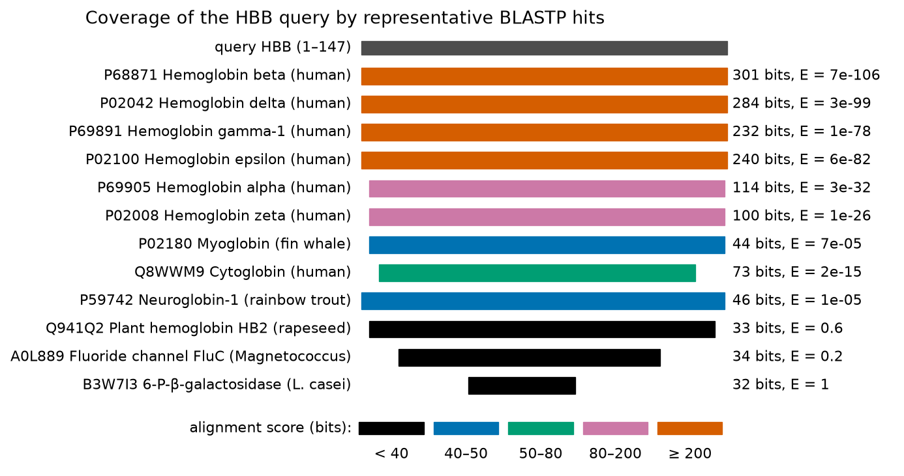
Tabla de descripciones
Cada fila es una secuencia de la base de datos, ordenada por E-value. Las columnas son:
| Columna | Significado y cómo usarla |
|---|---|
| Description | Título del registro de la base de datos. Es una anotación escrita por otra persona, posiblemente inferida por similitud: trátala como una hipótesis (ver Errores frecuentes). |
| Scientific name | Organismo de la secuencia sujeto (en ClusteredNR, el organismo del representante y el ancestro común de los miembros del cluster). |
| Max score | Bit score del mejor HSP individual con esta secuencia sujeto. |
| Total score | Suma de los bit scores de todos los HSP con esta secuencia sujeto. Total > Max indica varias regiones alineadas separadas: repeticiones, múltiples dominios o un alineamiento interrumpido por una inserción grande. |
| Query cover | Porcentaje de la consulta cubierto por los HSP. Una identidad alta en el 10% de la consulta es un hallazgo muy distinto de la misma identidad en el 100%. |
| E value | Número esperado de alineamientos por azar con al menos la puntuación máxima en esta búsqueda (Sección 4.2); el criterio principal de significancia. |
| Per. ident | Porcentaje de identidad del mejor HSP (posiciones idénticas / longitud del alineamiento). |
| Acc. len | Longitud de la secuencia sujeto; compárala con la longitud de la consulta para detectar fragmentos y proteínas multidominio. |
| Accession | Accession.version de la secuencia sujeto, con enlace a su registro (Unidad 3). |
Alineamientos
Para cada secuencia sujeto, la sección de alineamientos muestra todos los HSP. El encabezado da la puntuación en bits y, entre paréntesis, la puntuación bruta; el E-value; el método (por ejemplo, «Compositional matrix adjust.»); y los recuentos de identidades, positivos (pares con puntuación de sustitución positiva) y gaps. En el alineamiento propiamente dicho, la línea central muestra el residuo cuando la consulta y la secuencia sujeto son idénticas, «+» para un par positivo (similar) y un espacio en blanco para un desapareamiento con puntuación cero o negativa. A continuación se muestra el HSP β-globina/α-globina producido por BLAST+ (con el ajuste composicional por defecto); compáralo con el alineamiento de longitud completa obtenido en la Sección 4.2.
Observa que el HSP local comienza en el residuo 4 de la consulta y en el residuo 3 de la secuencia sujeto: BLAST recorta los residuos N-terminales porque no aumentan la puntuación, e informa 63 identidades en 145 columnas (43%) y 88 positivos (61%). Las ocho posiciones con gap forman tres gaps: uno de 2 posiciones en la línea de la β-globina y dos (de 1 y 5 posiciones) en la línea de la α-globina; estos dos últimos se ubican donde a la cadena α le faltan residuos presentes en la cadena β.
Taxonomía y otros informes
El informe de taxonomía agrupa los hits por linaje y organismo, y muestra de un vistazo si los homólogos aparecen solo en vertebrados o en todos los dominios de la vida; las líneas de ClusteredNR pueden expandirse para mostrar los miembros del cluster. Los hits pueden descargarse (FASTA, tabular, XML o JSON), alinearse o representarse como un árbol de distancias.
Pruébalo tú mismo: leer el informe en la web
- Abre NCBI BLAST → Protein BLAST. Ingresa el número de acceso
P68871como consulta. - Elige la base de datos «UniProtKB/Swiss-Prot (swissprot)» y deja blastp como algoritmo. Ejecuta.
- En Descriptions, busca la δ-globina humana y la α-globina humana. Anota su Max score, Query cover, E value y porcentaje de identidad; compáralos con la Tabla 6 (diferirán ligeramente porque BLAST es local y usa ajuste composicional).
- Abre Graphic Summary e identifica las clases de color. Luego abre Taxonomy y anota cuántos organismos están representados.
- Repite la búsqueda con la base de datos por defecto ClusteredNR y compara el número y la diversidad de los hits.
BLAST+ local en la línea de comandos
Ejecutar BLAST localmente es lo habitual cuando hay que buscar muchas consultas, cuando la base de datos es privada (un genoma nuevo, secuencias derivadas de pacientes) o cuando los resultados deben ser exactamente reproducibles. El flujo de trabajo tiene dos pasos: construir una base de datos con makeblastdb y luego buscar en ella.
Descargamos todas las entradas revisadas de UniProtKB (Swiss-Prot release 2026_03, publicada el 2 de septiembre de 2026: 575,748 secuencias y 209,017,843 residuos) desde el servicio REST de UniProt en formato FASTA, construimos una base de datos BLAST y buscamos en ella con la β-globina. En un computador portátil, la base de datos se construyó en unos 8 segundos y la búsqueda por defecto tardó menos de medio segundo.
Pruébalo tú mismo: construir una base de datos y buscar en ella
Descarga el archivo FASTA desde UniProt (busca «reviewed:true», Download, FASTA) o, para una prueba más rápida, solo la familia de las globinas (consulta family:"globin family" AND reviewed:true, 1,201 secuencias en nuestra fecha de descarga). Luego, en una terminal (o en Colab después de !apt-get install ncbi-blast+):
Los tres primeros hits son idénticos (100%) en los 147 residuos: la β-globina humana, la del chimpancé (P68873) y la del bonobo (P68872) tienen la misma secuencia. La β-globina del gorila (P02024) difiere en una posición.
Salida tabular: cada columna explicada
Los formatos tabulares -outfmt 6 (simple) y -outfmt 7 (con líneas de comentario que nombran los campos y cuentan los hits) son los más útiles para análisis posteriores, porque cada HSP ocupa una línea de campos separados por tabulaciones:
| # | Campo | Significado |
|---|---|---|
| 1 | qaccver | Accession.version de la consulta |
| 2 | saccver | Accession.version de la secuencia sujeto |
| 3 | pident | Porcentaje de posiciones idénticas en el HSP |
| 4 | length | Longitud del alineamiento (columnas, incluidos los gaps) |
| 5 | mismatch | Número de pares desapareados |
| 6 | gapopen | Número de aperturas de gap (no de posiciones con gap) |
| 7–8 | qstart, qend | Inicio y fin del HSP en la consulta |
| 9–10 | sstart, send | Inicio y fin en la secuencia sujeto (send < sstart indica la hebra negativa en búsquedas de nucleótidos) |
| 11 | evalue | Valor esperado (E-value) |
| 12 | bitscore | Bit score |
Se pueden solicitar campos adicionales por su nombre, por ejemplo -outfmt "6 qaccver saccver pident length evalue bitscore score qcovs qcovhsp ppos gaps slen stitle": puntuación bruta, cobertura de la consulta por secuencia sujeto y por HSP, porcentaje de positivos, posiciones con gap, longitud de la secuencia sujeto y título de la secuencia sujeto. Una tabla así puede leerse directamente con pandas (pd.read_csv(file, sep="\t", names=[...])).
Lo que encontró la búsqueda en Swiss-Prot
Con los parámetros por defecto y E ≤ 10, la β-globina se alineó con 917 entradas de Swiss-Prot, 884 de ellas con E ≤ 10−3. Según su nombre, 826 eran cadenas de hemoglobina de muchas especies, 67 mioglobinas, 17 otras globinas (citoglobinas, neuroglobinas, globinas de invertebrados y de plantas) y 7 proteínas no relacionadas con E entre 0.18 y 9.8 (Figura 15). Tres características merecen atención. El E-value y la identidad están relacionados, pero no son intercambiables, porque las longitudes de los alineamientos difieren. Las globinas verdaderas se extienden más allá de E = 10−3 (la identidad más baja entre ellas, 20.1%, correspondió a una hemoglobina vegetal de Arabidopsis con E = 5.6), entremezcladas con las proteínas no relacionadas: la twilight zone en datos reales. Y algunas cadenas de hemoglobina con identidad alta tienen E-values modestos porque son fragmentos en la base de datos (P85312: 47.6% en 42 residuos, E = 0.001). Notablemente, se encontraron 67 mioglobinas de otras especies (mejor E = 1.4 × 10−14), pero no la mioglobina humana, por la razón de seeding explicada en la Sección 4.2; con -threshold 9 aparece con E = 1.5 × 10−5.
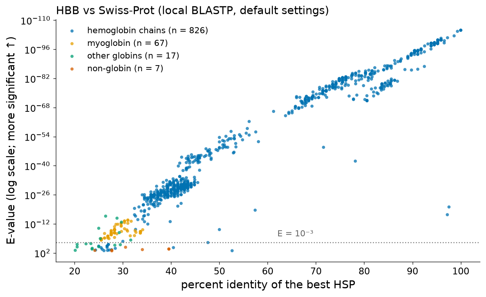
BLAST remoto desde programas
NCBI BLAST puede invocarse desde programas mediante la BLAST URL API (Blast.cgi con CMD=Put para enviar y CMD=Get para recuperar por RID), mediante la opción -remote de BLAST+ o mediante Bio.Blast.NCBIWWW.qblast de Biopython [22]. Las búsquedas remotas son adecuadas para pocas consultas, pero son lentas (la nuestra tardó unos 70 segundos) y están sujetas a las normas de uso de NCBI (documentación de la BLAST URL API, Recursos en línea), que piden espaciar las solicitudes, evitar consultas de estado frecuentes y usar BLAST+ local para lotes grandes.
Pruébalo tú mismo: BLAST desde Python (funciona en Colab)
from Bio.Blast import NCBIWWW, NCBIXML
hbb = ("MVHLTPEEKSAVTALWGKVNVDEVGGEALGRLLVVYPWTQRFFESFGDLSTPDAVMGNPKVKAHGKKVLGAF"
"SDGLAHLDNLKGTFATLSELHCDKLHVDPENFRLLGNVLVCVLAHHFGKEFTPPVQAAYQKVVAGVANALAHKYH")
handle = NCBIWWW.qblast("blastp", "swissprot", hbb, expect=10, hitlist_size=1000)
record = NCBIXML.read(handle)
print("database:", record.database, "|", record.num_sequences_in_database, "sequences")
print("hits returned:", len(record.alignments))
for aln in record.alignments[:3]:
h = aln.hsps[0]
print(aln.accession, f"{h.bits:.0f} bits E={h.expect:.2g} identities {h.identities}/{h.align_length}")La búsqueda remota devolvió 739 hits, todos ellos cadenas de hemoglobina, con E-values de hasta 1.1 × 10−3. No encontró ninguna mioglobina, mientras que nuestra búsqueda local en el Swiss-Prot de UniProt encontró 67. Los resultados remotos y locales difieren porque las bases de datos difieren (el swissprot de NCBI tiene 487,728 secuencias y el de UniProt 575,748, con distinto tratamiento de la redundancia) y porque no todos los ajustes del servidor son visibles en el registro devuelto. Este es un argumento práctico a favor de las búsquedas locales y documentadas cuando los resultados deben ser reproducibles.
Errores frecuentes en la interpretación de los resultados de BLAST
BLAST es fácil de ejecutar y fácil de malinterpretar. Los siguientes errores explican la mayoría de las equivocaciones de los principiantes, y muchas de las de investigadores con experiencia.
1. Regiones de baja complejidad
Los segmentos con una composición fuertemente sesgada —tramos de un solo aminoácido (poliglutamina, polialanina), linkers ricos en prolina, repeticiones Gly-X-Y de tipo colágeno o repeticiones simples como (CA)n en el DNA— violan el supuesto de composición aleatoria en el que descansa la estadística. Dos proteínas no relacionadas que contienen cada una un segmento rico en prolina pueden producir un alineamiento con un E-value engañosamente pequeño. BLAST contrarresta esto de dos maneras: el enmascaramiento (SEG para proteínas, DUST para DNA [39][40]), que excluye esas regiones del seeding, y la estadística basada en la composición, que reescala las puntuaciones de las secuencias sesgadas [41]. Si un hit se alinea solo dentro de una región de baja complejidad de la consulta, considéralo no informativo.
2. Proteínas multidominio
Muchas proteínas son mosaicos de dominios, y un hit significativo puede cubrir solo uno de ellos. Una consulta que comparte un dominio quinasa con una proteína de la base de datos no es por ello «la misma proteína»: la proteína de la base de datos puede contener dominios reguladores adicionales ausentes en la consulta, y viceversa. Inspecciona siempre la cobertura de la consulta, las posiciones de los HSP (qstart/qend) y las longitudes de las secuencias sujeto; cuando el Total score supera al Max score, revisa todos los HSP. Transfiere la anotación dominio por dominio, no proteína por proteína. Las bases de datos de dominios (Pfam, InterPro, CDD) están diseñadas para esto (Unidad 4B).
3. Errores de anotación transitiva
La mayoría de los registros de secuencias se anotaron automáticamente por similitud con otros registros, que a su vez pueden haber sido anotados por similitud. A lo largo de esas cadenas, un error introducido una sola vez —una función equivocada asignada a una proteína, o el nombre de un dominio dado a una proteína multidominio— se propaga a todos los registros posteriores. Un estudio sistemático de superfamilias de enzimas encontró niveles altos de anotación errónea en las bases de datos no revisadas y anotadas automáticamente, muy superiores a los del Swiss-Prot curado manualmente [43]. Defensas prácticas: prefiere hits cuya función esté respaldada por evidencia experimental (en UniProt, revisa las etiquetas de evidencia y el nivel de «protein existence»); privilegia las bases de datos revisadas para transferir anotaciones; desconfía de los nombres que contienen «putative», «probable», «-like» o «uncharacterized»; y nunca transfieras una función precisa desde un hit en la twilight zone.
4. Los E-values dependen de la base de datos
Como se mostró en la Sección 4.2, el mismo alineamiento puede ser significativo frente a una base de datos pequeña y no significativo frente a una grande: β-globina/leghemoglobina tuvo E = 0.022 frente a 1,201 globinas y E > 10 frente a todo Swiss-Prot. Como las bases de datos crecen cada año, un hit que era significativo en una búsqueda antigua puede perder significancia en una nueva. Informa la base de datos, su versión (release) y su tamaño junto con los E-values, y compara búsquedas mediante bit scores.
5. La ausencia de evidencia no es evidencia de ausencia
BLAST puede pasar por alto homólogos verdaderos: el seeding por defecto omitió por completo la mioglobina humana (Sección 4.2), el límite max_target_seqs puede truncar la lista antes de los hits débiles pero genuinos, y una base de datos restringida o desactualizada puede simplemente no contener la secuencia relevante. Antes de concluir que «el gen no tiene homólogos», repite la búsqueda con parámetros más sensibles, bases de datos más grandes y métodos basados en perfiles.
6. Redundancia y sesgo taxonómico
Las bases de datos sobrerrepresentan los organismos modelo y las proteínas de importancia médica. En nuestra búsqueda en Swiss-Prot, 826 de los 917 hits fueron cadenas de hemoglobina de distintas especies, lo que empujó a las globinas distantes, más informativas, al final de la lista. ClusteredNR, las restricciones por organismo o la exclusión del propio taxón de la consulta ayudan a ver más allá de la redundancia.
7. Porcentaje de identidad sin longitud
Un alineamiento corto puede tener una identidad alta por azar o porque la entrada de la base de datos es un fragmento (P85312 en nuestra búsqueda: 47.6% de identidad en 42 residuos, E = 0.001). La identidad debe leerse siempre junto con la longitud del alineamiento, la cobertura de la consulta y el E-value. A la inversa, el mejor hit no es necesariamente el pariente evolutivo más cercano: tasas de evolución desiguales, secuencias ausentes en la base de datos y la transferencia horizontal (xenólogos) pueden hacer que una secuencia más distante obtenga la puntuación más alta [5]. Para establecer relaciones se requiere un análisis filogenético (Unidad 4B), no un ranking de hits de BLAST.
Conexión clínica: BLAST en el laboratorio de diagnóstico
La identificación de patógenos, la detección de genes de resistencia y la interpretación de variantes dependen de búsquedas por similitud, y cada error frecuente tiene un correlato clínico: un contaminante o una referencia mal anotada pueden llevar a una especie equivocada; un gen de resistencia fusionado con otro dominio puede detectarse solo parcialmente; y una variante de significado incierto no puede clasificarse por el solo hecho de que exista una secuencia similar. Por eso los laboratorios acreditados usan bases de datos curadas, umbrales validados y versiones de software documentadas.
Ideas clave de la Sección 4.3
- Elige el programa según el tipo de consulta y de base de datos; prefiere las comparaciones a nivel de proteína (blastp, blastx, tblastn) para secuencias codificantes. En sensibilidad para nucleótidos: megablast < dc-megablast < blastn.
- Bases de datos por defecto en el servicio web de NCBI: ClusteredNR para proteínas (desde agosto de 2025) y core_nt para nucleótidos (desde agosto de 2024); Swiss-Prot para anotaciones confiables; PDB para moldes estructurales.
- Parámetros clave: expect threshold, max target sequences, word size y T, matriz y gap costs, enmascaramiento de regiones de baja complejidad, ajuste composicional.
- Lee juntos Max score, Total score, Query cover, E value y Per. ident; inspecciona los alineamientos; revisa en el encabezado los parámetros usados.
- BLAST+ con
makeblastdby-outfmt 6/7da resultados reproducibles y fáciles de procesar; el BLAST remoto es adecuado para pocas consultas. - Errores frecuentes: baja complejidad, proteínas multidominio, errores de anotación transitiva, dependencia de E respecto del tamaño de la base de datos, homólogos no detectados, redundancia, fragmentos cortos.
Puente
La sección práctica del documento complementario resume un protocolo mínimo de búsqueda de homología (sus Secciones 7.5 y 10). La Unidad 4B continúa con los perfiles de PSI-BLAST, Pfam y PROSITE; la Unidad 5 usa búsquedas BLAST contra PDB para encontrar moldes para la predicción de estructura (ver también Tema 2 — Predicción de la estructura de proteínas).
Caso transversalβ-globina, hemoglobina y anemia de células falciformes vistas a través del alineamiento de a pares
El hilo conductor del curso es el gen de la β-globina (HBB) y la anemia de células falciformes, la primera enfermedad explicada a nivel molecular: Pauling y colaboradores mostraron en 1949 que la hemoglobina falciforme difiere electroforéticamente de la hemoglobina normal [44], e Ingram mostró en 1957 que la diferencia es el reemplazo de un solo aminoácido [45]. En las Unidades 1–3 conociste el gen, su secuenciación y sus registros en bases de datos (RefSeq NM_000518.5, UniProt P68871). Aquí aplicamos los métodos de esta unidad a tres preguntas: cómo se relaciona la β-globina con sus parálogos y homólogos distantes, qué revela sobre ella una búsqueda en bases de datos, y qué puede y qué no puede decir un alineamiento sobre la mutación falciforme.
Comparación de la β-globina con sus parientes
Caso: identidades a lo largo de la familia de las globinas
Alineamos globalmente la β-globina humana (BLOSUM62, gaps 10/0.5) con siete proteínas: los parálogos de tipo β, δ (HBD), ε (HBE1) y γ1 (HBG1); los parálogos de tipo α, α (HBA1) y ζ (HBZ); la mioglobina (MB) y la leghemoglobina A vegetal de la soya. Las identidades siguen un orden evolutivo claro (Figura 16 y Tabla 6): 93.2% con la δ-globina, 75.5% con ε, 72.8% con γ1, 43.6% con α, 35.6% con ζ, 24.5% con la mioglobina y 20.5% con la leghemoglobina. Las cadenas de tipo β son productos de duplicaciones recientes dentro del cluster β; la separación α/β es más antigua; la mioglobina divergió antes; y las globinas vegetales y animales comparten un ancestro anterior a la divergencia entre plantas y animales [2].
Dos observaciones conectan con la teoría. Primero, la mioglobina y la leghemoglobina caen dentro de la twilight zone, donde la identidad por sí sola no permitiría establecer la homología; la prueba de barajado (z = 16.0 y 8.3; Sección 4.2) y el plegamiento de globina compartido sí lo permiten. Segundo, la comparación con la δ-globina muestra cómo pequeñas diferencias de secuencia pueden importar: la δ-globina difiere de la β-globina en solo 10 de 147 posiciones, pero la HbA2 (α2δ2) es un componente minoritario de la hemoglobina adulta, de modo que las diferencias relevantes están en la regulación génica, no solo en la secuencia de la proteína.
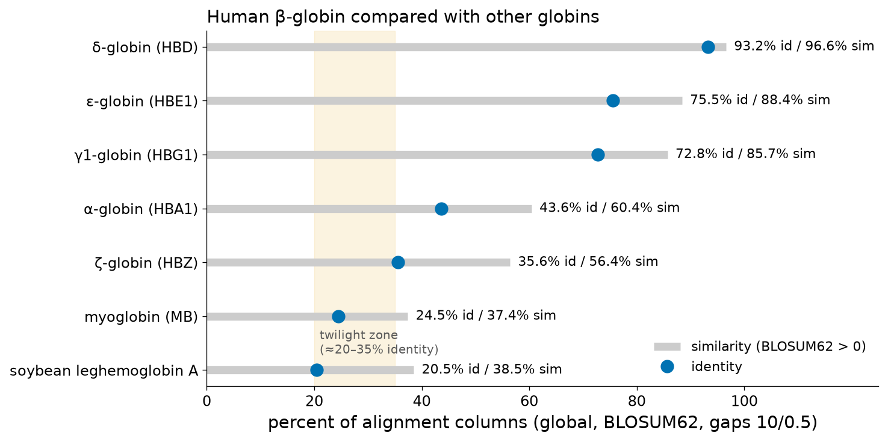
Pruébalo tú mismo: reproducir las identidades del caso
import urllib.request
from Bio import Align, SeqIO
from Bio.Align import substitution_matrices
from io import StringIO
def uniprot(acc):
txt = urllib.request.urlopen(f"https://rest.uniprot.org/uniprotkb/{acc}.fasta").read().decode()
return str(SeqIO.read(StringIO(txt), "fasta").seq)
aligner = Align.PairwiseAligner(mode="global",
substitution_matrix=substitution_matrices.load("BLOSUM62"),
open_gap_score=-10, extend_gap_score=-0.5)
hbb = uniprot("P68871")
for acc, name in [("P02042", "HBD"), ("P69905", "HBA1"), ("P02144", "MB"), ("P02238", "Lb a (soybean)")]:
aln = aligner.align(hbb, uniprot(acc))[0]
cols = aln.length
ident = sum(a == b for a, b in zip(aln[0], aln[1]) if a != "-")
print(f"HBB vs {name:15s} score {aln.score:6.1f} identity {ident}/{cols} = {100*ident/cols:.1f}%")BLAST de la β-globina
Caso: lo que devuelve una búsqueda en bases de datos
La búsqueda en Swiss-Prot con la β-globina (Sección 4.3) devolvió 917 entradas con E ≤ 10, desde β-globinas de primates idénticas (humano, chimpancé y bonobo; E = 6.6 × 10−106, 301 bits) hasta la twilight zone, donde hemoglobinas vegetales y proteínas no relacionadas comparten E-values entre 0.1 y 10. Los ortólogos son las secuencias más similares (la β-globina del chimpancé y la del bonobo son idénticas a la proteína humana; la del gorila difiere en una posición), seguidos por los parálogos de tipo β, las cadenas de tipo α y, mucho más abajo, mioglobinas, citoglobinas y neuroglobinas. Dos lecciones del caso son fáciles de recordar: el seeding por defecto de BLAST omitió la mioglobina humana mientras encontraba 67 mioglobinas de otras especies, y el mismo alineamiento con la leghemoglobina es significativo o no según el tamaño de la base de datos. Ambas muestran que el resultado de una búsqueda es el producto de un algoritmo con parámetros, aplicado a una base de datos de un tamaño determinado.
La sustitución falciforme en un alineamiento
Caso: HbA frente a HbS
El alelo falciforme (rs334) cambia el codón 7 de la secuencia codificante de HBB (contando la metionina iniciadora) de GAG a GTG: en notación HGVS, NM_000518.5:c.20A>T, p.Glu7Val, tradicionalmente llamada Glu6Val porque la metionina iniciadora se elimina de la proteína madura. En el mRNA de RefSeq la secuencia codificante comienza en el nucleótido 51, de modo que la A mutada es el nucleótido 70 de NM_000518.5. Alinear la proteína normal con la falciforme da:
La puntuación global con BLOSUM62 baja de 780 (β-globina contra sí misma) a 773, porque la identidad E–E (+5) se reemplaza por el desapareamiento E–V (−2). En PAM1, el glutamato se convierte en valina con una probabilidad de 0.00024 por PAM, más de veinte veces menos a menudo que en aspartato (0.00534): es una sustitución que la evolución rara vez acepta, lo que es coherente con su efecto funcional; en el estado desoxigenado, Val6 crea un contacto hidrofóbico que impulsa la polimerización de la HbS, como mostrará estructuralmente la Unidad 5.
Sin embargo, para una búsqueda por similitud las dos proteínas son prácticamente idénticas: coinciden en 146 de 147 posiciones (99.3%), y cualquier búsqueda BLAST devuelve esencialmente la misma lista de hits para ambas. Esta es la limitación central que hay que tener presente: la similitud de secuencia mide el parentesco, no la consecuencia funcional o clínica. Detectar e interpretar una variante patogénica requiere alinear los reads del paciente contra una secuencia de referencia con resolución de un solo nucleótido (Unidad 2), conocer la estructura de la proteína (Unidad 5) y contar con evidencia clínica.
Conexión clínica: del alineamiento al diagnóstico
Los programas de tamizaje neonatal detectan la HbS a nivel de proteína (electroforesis, cromatografía líquida de alta eficacia o espectrometría de masas), y la confirmación molecular alinea la secuencia de HBB del paciente con NM_000518.5 para identificar c.20A>T y otras variantes, incluidas las que causan β-talasemia. La maquinaria de alineamiento de a pares de esta unidad forma parte, por lo tanto, de un examen clínico, pero su resultado —la identificación de una variante (variant call)— debe interpretarse con datos poblacionales, funcionales y clínicos.
Puente
La Unidad 4B alinea simultáneamente toda la familia de las globinas, identifica el dominio globina de Pfam (PF00042) y el perfil globina de PROSITE, y construye una filogenia que explica el orden de identidades observado en la Figura 16. La Unidad 5 examina las estructuras de HbA y HbS (PDB 2HHB, 2HBS) para ver dónde se ubica Val6.
Taller prácticoAlineamiento de a pares y BLAST de las globinas
Esta sesión guiada dura 100–120 minutos en un PC de la universidad con un navegador web; las tareas opcionales en Python se ejecutan en Google Colab. Trabajen en parejas. Registra cada parámetro que uses: un resultado sin sus parámetros no se puede verificar.
Tareas
- Obtener las secuencias (10 min). Desde UniProt, descarga en formato FASTA la β-globina humana (P68871), la α-globina humana (P69905), la mioglobina humana (P02144) y la leghemoglobina A de soya (P02238). Esperado: longitudes de 147, 142, 154 y 144 residuos.
- Alineamiento global (15 min). En el EBI, abre EMBOSS Needle (Pairwise Sequence Alignment → Protein). Alinea P68871 con P69905 usando los valores por defecto (EBLOSUM62, gap open 10, gap extend 0.5). Registra la identidad, la similitud, los gaps y la puntuación. Esperado: identidad y similitud cercanas al 43.6% y 60.4% de la Tabla 6; las pequeñas diferencias se deben a que Needle no penaliza por defecto los gaps terminales y normaliza los porcentajes a su manera. Ubica el gap que corresponde al extremo N-terminal más corto de la α-globina.
- Alineamiento local (15 min). Alinea la β-globina con la mioglobina con EMBOSS Needle y con EMBOSS Water (local). Compara las puntuaciones y las regiones cubiertas. Esperado: identidades de alrededor de 25% en ambos casos, con Water cubriendo casi toda la longitud: homología en la twilight zone.
- Dot plots (15 min). Con EMBOSS Dotmatcher, compara la β-globina con la α-globina usando tamaños de ventana de 5, 10 y 20 y distintos umbrales. Luego compara la poliubiquitina C (P0CG48) consigo misma. Esperado: para las globinas, una diagonal principal con un desplazamiento cerca del residuo 50 de la β-globina; para la poliubiquitina, diagonales de repetición nueve veces, separadas por 76 residuos.
- Programación dinámica a mano (15 min). Llena la matriz de Needleman–Wunsch para x = HEAG e y = HAG con BLOSUM62 y una penalización lineal de gap d = 8 (H–H = 8, A–A = 4, G–G = 6, E–A = −1, E–H = 0, E–G = −2, H–A = −2, H–G = −2, A–G = 0). Reconstruye (traceback) el alineamiento óptimo. Esperado: puntuación óptima 10; alineamiento único HEAG / H-AG.
- BLASTP en la web (20 min). Ejecuta Protein BLAST con P68871 contra UniProtKB/Swiss-Prot. Completa una tabla con el primer hit de cada clase: un parálogo humano de tipo β, la α-globina humana, cualquier mioglobina, cualquier neuroglobina o citoglobina. Para cada uno, registra Max score, Total score, Query cover, E value, Per. ident y Accession. Luego repite la búsqueda contra ClusteredNR y describe en dos oraciones cómo cambia la lista de resultados.
- Experimento de sensibilidad (10 min). En Protein BLAST, marca «Align two or more sequences» y alinea P68871 con P02144 (mioglobina humana) usando los parámetros por defecto. Luego baja el umbral de puntuación de palabra o el tamaño de palabra en «Algorithm parameters» y repite, o usa el programa exacto de Smith–Waterman SSEARCH (suite FASTA en el EBI). Esperado: ningún hit significativo con un seeding estricto; un alineamiento de alrededor de 25% de identidad en unos 145 residuos, con un E-value muy inferior a 0.001, con una configuración más sensible.
- Python en Colab (opcional, 15 min). Ejecuta los programas de los recuadros Pruébalo tú mismo de la Sección 4.2 y del Caso transversal. Modifica
t6_case.pypara usar BLOSUM45 y gap costs de 15/2, y explica los cambios en la identidad.
Entregable
Un informe de dos páginas que contenga: (i) la tabla de la tarea 6 con una interpretación de una oración para cada fila; (ii) la matriz llenada a mano de la tarea 5 (foto o tabla) con el traceback marcado; (iii) un párrafo que explique, con tus propias palabras, por qué BLAST omitió o encontró la mioglobina en la tarea 7, usando los términos palabra, umbral, two-hit y E-value; y (iv) un párrafo que discuta por qué la β-globina y la β-globina falciforme son indistinguibles en una búsqueda BLAST, pero clínicamente diferentes.
Errores comunes en el taller
- Olvidar seleccionar un programa de proteínas (no de nucleótidos) para secuencias de UniProt.
- Comparar E-values obtenidos contra bases de datos diferentes.
- Informar el porcentaje de identidad sin la longitud del alineamiento o la cobertura de la consulta.
- Llenar la primera fila de una matriz de Needleman–Wunsch con ceros (eso es Smith–Waterman).
AutoevaluaciónPreguntas con respuestas desarrolladas
Intenta responder cada pregunta por escrito antes de abrir la solución. Las preguntas 1–7 son conceptuales, las 8–15 numéricas y las 16–22 aplicadas o interpretativas.
Preguntas conceptuales
1. Un colega escribe que «la β-globina humana y la mioglobina son 25% homólogas». ¿Qué está mal y cómo debería redactarse la afirmación?
La homología es una relación evolutiva cualitativa —dos secuencias comparten o no un ancestro común—, por lo que no puede expresarse como porcentaje. La afirmación correcta es que las dos proteínas son homólogas (una inferencia respaldada por una similitud significativa y un plegamiento compartido) y que tienen alrededor de 25% de identidad en un alineamiento especificado (24.5% de 155 columnas en nuestro alineamiento global con BLOSUM62 y gaps 10/0.5; 25.5% en 145 columnas en el alineamiento local).
2. Clasifica cada par como ortólogos o parálogos: (a) HBB humana y HBB de chimpancé; (b) HBB humana y HBD humana; (c) HBA1 humana y HBB de chimpancé.
(a) Ortólogos: su último ancestro común es la especiación que separó los linajes humano y del chimpancé. (b) Parálogos: surgieron de una duplicación dentro del cluster de la β-globina. (c) Parálogos: aunque están en especies distintas, su último ancestro común es la antigua duplicación que separó los linajes α y β, no un evento de especiación (Figura 1). Estar en especies distintas no convierte a dos genes en ortólogos.
3. ¿Qué es un xenólogo y por qué los xenólogos pueden inducir a error en la asignación taxonómica basada en el mejor hit de BLAST?
Un xenólogo es un homólogo cuya historia incluye una transferencia horizontal de genes desde otro linaje. Como el gen entró al genoma desde un donante distante, sus parientes más cercanos en la base de datos pueden pertenecer al linaje del donante. Una asignación taxonómica por mejor hit de ese gen, o de un read derivado de él, apuntaría por lo tanto al donante y no al organismo que realmente porta el gen.
4. Explica por qué los números de PAM y de BLOSUM van en direcciones opuestas respecto de la distancia evolutiva.
Un número PAM es una distancia evolutiva: PAMn = (PAM1)n, de modo que un n mayor significa más cambio acumulado y la matriz es adecuada para secuencias más divergentes. Un número BLOSUM es un umbral de agrupamiento: BLOSUMX se construye a partir de bloques en los que se fusionaron las secuencias con más de X% de identidad, de modo que un X mayor significa que secuencias más similares aportaron recuentos de sustituciones y la matriz es adecuada para parientes más cercanos. Por eso PAM250 sirve para homólogos distantes y BLOSUM80 para cercanos.
5. ¿Por qué la puntuación esperada de una matriz de sustitución sobre secuencias aleatorias debe ser negativa para el alineamiento local?
En Smith–Waterman, la puntuación acumulada se reinicia a cero solo cuando se vuelve negativa. Si los pares aleatorios puntuaran positivamente en promedio, la puntuación a lo largo de cualquier diagonal tendería a aumentar con la longitud, y el mejor alineamiento «local» se extendería sobre secuencias completas no relacionadas. Con una esperanza negativa (para BLOSUM62 y la composición de Swiss-Prot calculamos −0.94 por par), los segmentos aleatorios tienden a descender y solo los segmentos genuinamente similares acumulan puntuaciones altas.
6. ¿Por qué el algoritmo de Gotoh necesita tres matrices para penalizaciones afines de gap, mientras que Needleman–Wunsch con gaps lineales necesita una?
Con una penalización afín, el costo de agregar una posición de gap depende de si la columna anterior ya era un gap (extensión, costo e) o no (apertura, costo o + e). Una sola puntuación por celda no registra cómo termina el mejor alineamiento. Gotoh guarda tres valores por celda —la mejor puntuación que termina en un par alineado (M), en un gap en una secuencia (Ix) y en un gap en la otra (Iy)—, de modo que cada paso puede aplicar el costo correcto manteniendo un tiempo de ejecución O(nm).
7. En BLAST, ¿qué controlan el tamaño de palabra w, el umbral de vecindario T y la ventana two-hit A? ¿Qué ocurre con la velocidad y la sensibilidad cuando se baja T?
w es la longitud de las palabras usadas como seeds; T es la puntuación de sustitución mínima para que una palabra de la base de datos cuente como vecina de una palabra de la consulta; A es la distancia máxima entre dos hits en la misma diagonal para que desencadenen una extensión. Bajar T agranda los vecindarios (para la β-globina, 2,863 palabras con T = 11 frente a 1,008 con T = 13), de modo que se encuentran más hits: la sensibilidad aumenta y también el número de extensiones, por lo que la velocidad disminuye. En nuestro ejemplo, bajar T de 11 a 9 permitió a BLAST detectar la mioglobina humana.
Preguntas numéricas
8. ¿Cuántos alineamientos distintos (C(n+m, n)) y cuántos caminos en la grilla (número de Delannoy) existen para dos secuencias de longitud 3?
C(6, 3) = 20 alineamientos distintos. El número de Delannoy es D(3,3) = Σk C(3,k)2·2k = 1 + 9·2 + 9·4 + 1·8 = 1 + 18 + 36 + 8 = 63 caminos. La diferencia surge porque los caminos distinguen el orden de gaps adyacentes en las dos secuencias.
9. Llena la matriz de Needleman–Wunsch para x = CAWH (filas) e y = CWH (columnas) con BLOSUM62 y gap lineal d = 8, y da el alineamiento óptimo. (C–C = 9, W–W = 11, H–H = 8, A–W = −3, C–W = −2, A–C = 0, A–H = −2, W–H = −2, C–H = −3.)
Primera fila y primera columna: 0, −8, −16, −24 (y −32 para la cuarta fila). Llenando fila por fila se obtiene: fila C: 9, 1, −7; fila A: 1, 6, −1; fila W: −7, 12, 4; fila H: −15, 4, 20. Por ejemplo, F(3,2), W frente a W, es max{F(2,1) + 11, F(2,2) − 8, F(3,1) − 8} = max{1 + 11, 6 − 8, −7 − 8} = 12. La puntuación óptima es F(4,3) = 20, alcanzada en diagonal desde F(3,2) = 12 con H–H (+8). Traceback: H–H, W–W, luego A frente a un gap (desde F(2,1) = 1 subiendo a F(1,1) = 9), luego C–C. Alineamiento: CAWH / C-WH, puntuación 9 − 8 + 11 + 8 = 20. Biopython confirma la puntuación y que el alineamiento es único.
10. Puntúa el alineamiento YPWT-QRF / HPETLEKF con BLOSUM62 y (a) una penalización lineal de gap de 6; (b) la penalización afín de BLASTP con o = 11, e = 1.
Puntuaciones de los pares: Y–H +2, P–P +7, W–E −3, T–T +5, Q–E +2, R–K +2, F–F +6, que suman 21. (a) Una posición de gap cuesta 6: 21 − 6 = 15 (el óptimo de Smith–Waterman de la Tabla 5). (b) Un gap de longitud 1 cuesta o + e = 12: 21 − 12 = 9.
11. Un alineamiento de BLASTP tiene una puntuación bruta S = 100 con λ = 0.267 y K = 0.041. Calcula el bit score y el E-value para un espacio de búsqueda efectivo de 5.9 × 109.
S′ = (λS − ln K)/ln 2 = (26.7 + 3.194)/0.693 = 43.1 bits. E = m·n·2−S′ = 5.8965 × 109 × 2−43.13 = 6.1 × 10−4. El alineamiento superaría un umbral de 10−3, pero por muy poco.
12. Convierte E = 0.05 y E = 3 en P-values. ¿Por qué BLAST informa E en lugar de P?
P = 1 − e−E: para E = 0.05, P = 0.0488; para E = 3, P = 0.950. Para valores pequeños E ≈ P, pero para valores grandes P se satura cerca de 1 y pierde resolución (E = 3 y E = 10 dan P = 0.95 y 0.99995), mientras que E sigue siendo directamente interpretable como el número esperado de hits por azar.
13. Un alineamiento tiene E = 2 × 10−6 en una base de datos de 500,000 secuencias. Sin cambiar el alineamiento, la base de datos crece a 5,000,000 de secuencias de longitud similar. ¿Qué ocurre con el bit score y con el E-value?
El bit score no cambia, porque depende solo del alineamiento y del sistema de puntuación. El E-value es proporcional al tamaño del espacio de búsqueda, de modo que aumenta unas diez veces, a aproximadamente 2 × 10−5 (el valor exacto depende de las longitudes efectivas). Por eso deben compararse bit scores, y no E-values, entre versiones de una base de datos.
14. Usando la curva PAM de la Figura 4, ¿qué porcentaje de identidad esperarías entre dos secuencias separadas por 120 PAM? ¿Y cuántas unidades PAM corresponden a 50% de identidad?
En PAM120 la diferencia esperada es de 62.1%, de modo que la identidad esperada es de alrededor de 38%. Un cincuenta por ciento de diferencia (50% de identidad) corresponde a aproximadamente PAM80 (50.1% de diferencia). Observa la no linealidad: duplicar la distancia PAM de 80 a 160 eleva la diferencia solo de 50% a 70%.
15. Estima la memoria necesaria para almacenar la matriz completa de programación dinámica para dos secuencias de 10,000 nucleótidos con enteros de 4 bytes. ¿Cómo puede reducirse?
Alrededor de 104 × 104 = 108 celdas × 4 bytes = 400 MB (el triple con las tres matrices de Gotoh). Si solo se necesita la puntuación, bastan dos filas. Si se necesita el alineamiento, el método de dividir y conquistar de Hirschberg y Myers–Miller lo recupera con memoria lineal a cambio de aproximadamente el doble de cómputo; si las secuencias son similares, un alineamiento en banda (banded) calcula solo las celdas cercanas a la diagonal.
Preguntas aplicadas e interpretativas
16. Ensamblaste un transcrito a partir de RNA-seq de un organismo no modelo y quieres saber qué proteína codifica. ¿Qué programa BLAST y qué base de datos usarías primero, y por qué?
blastx contra una base de datos de proteínas (Swiss-Prot para una anotación confiable, o ClusteredNR/nr por cobertura). blastx traduce la consulta de nucleótidos en los seis marcos de lectura y compara las traducciones con proteínas, lo que es más sensible que la comparación de nucleótidos para secuencias codificantes y además revela el marco de lectura y posibles desplazamientos del marco (frameshifts).
17. Un hit muestra 90% de identidad en 30 residuos, query cover de 12%, E = 0.5. ¿Es esto evidencia de homología?
No. E = 0.5 significa que se espera por azar un alineamiento al menos así de bueno aproximadamente una vez cada dos búsquedas de este tamaño. La identidad alta se da en un segmento corto (12% de la consulta), que puede ser una región de baja complejidad, un fragmento o el azar. Verifica si la región tiene un sesgo de composición, si otros hits cubren el resto de la consulta y si métodos más sensibles o basados en perfiles respaldan la relación antes de sacar conclusiones.
18. En una tabla de descripciones, una secuencia sujeto tiene Max score 85 y Total score 240. ¿Qué indica esto y qué revisarías?
Varios HSP separados alinean la consulta con la misma secuencia sujeto (sus bit scores suman 240, y el mejor es 85). Las causas probables son repeticiones internas o múltiples copias de un dominio en la secuencia sujeto o en la consulta, o una inserción larga que divide un alineamiento en fragmentos. Inspecciona las coordenadas de los HSP (qstart/qend, sstart/send) y la arquitectura de dominios de ambas proteínas.
19. Una proteína de función desconocida tiene un mejor hit de BLAST (E = 10−40, 35% de identidad, cobertura completa) con un registro de la base de datos anotado como «putative transporter», a su vez anotado automáticamente. ¿Qué tanta confianza puedes tener en la función?
La homología está bien respaldada, pero la anotación funcional del hit es en sí misma una inferencia que puede provenir de una cadena de anotaciones basadas en similitud (anotación transitiva). Con 35% de identidad, incluso homólogos verdaderos pueden tener sustratos o funciones diferentes. Busca hits con función respaldada experimentalmente (entradas revisadas de Swiss-Prot con etiquetas de evidencia), revisa los residuos funcionales conservados y la composición de dominios, y describe la función como predicha, no establecida.
20. ¿Por qué BLASTP con parámetros por defecto omitió la mioglobina humana al buscar con la β-globina, aunque Smith–Waterman encontró un alineamiento local con z = 16 en la prueba de barajado? ¿Cómo la recuperarías?
BLASTP solo extiende los seeds que cumplen el criterio two-hit (dos hits de palabra con puntuación ≥ 11 en la misma diagonal dentro de 40 residuos). Entre la β-globina y la mioglobina hubo 49 hits de palabra, pero solo un par two-hit, en una diagonal equivocada, cuya extensión sin gaps puntuó 12; la similitud real nunca se extendió. Bajar T a 9 o 10, usar seeding de un solo hit (-window_size 0), usar una búsqueda exacta de Smith–Waterman (SSEARCH) o un método de perfiles (PSI-BLAST, HMMER) la recupera (E = 1.1 × 10−11 en la comparación BLAST de a pares con T = 9).
21. En las secuencias codificantes de HBB frente a HBD encontramos 21 transiciones y 11 transversiones. ¿Por qué es informativa esta proporción, dado que hay el doble de transversiones posibles?
Si las sustituciones ocurrieran al azar entre los 12 tipos posibles, las transversiones (8 tipos) superarían a las transiciones (4 tipos) en una proporción de alrededor de dos a uno. La proporción observada es la opuesta (21:11), lo que refleja la mayor tasa de mutación de las transiciones (por ejemplo, la desaminación de la citosina metilada produce C→T) y el hecho de que las transiciones en terceras posiciones de codón son más a menudo sinónimas. Un esquema de puntuación de nucleótidos que penaliza las transiciones menos que las transversiones modela esto mejor que una única penalización por desapareamiento.
22. La β-globina falciforme difiere de la β-globina normal en una posición. Explica por qué una búsqueda BLAST no puede distinguirlas clínicamente y qué enfoque sí puede.
Las dos proteínas son idénticas en 146/147 posiciones (99.3%); sus puntuaciones globales BLOSUM62 entre sí y contra sí mismas difieren solo de 773 a 780, y cualquier búsqueda en bases de datos devuelve esencialmente los mismos hits. La búsqueda por similitud responde «¿con qué está relacionado esto?», no «¿es patogénico este cambio?». La detección clínica usa métodos dirigidos —tamizaje a nivel de proteína (electroforesis, HPLC) y alineamiento de la secuencia de DNA del paciente con la referencia NM_000518.5 para identificar c.20A>T (p.Glu7Val)—, interpretados con conocimiento estructural y clínico.
Apéndice AGlosario
- Mutación puntual aceptada (PAM, accepted point mutation)
- Reemplazo de un aminoácido que se ha fijado en un linaje de proteínas, es decir, que ha sido aceptado por la selección natural; también es la unidad de distancia evolutiva (1 PAM = 1 cambio aceptado por cada 100 residuos).
- Penalización afín de gap
- Costo de gap de la forma o + e·k (apertura más extensión por posición), que hace que un gap largo sea más barato que varios cortos.
- Alineamiento
- Disposición de dos o más secuencias en columnas, con gaps insertados, de modo que se plantea la hipótesis de que los residuos de una columna derivan de una posición ancestral común.
- Alineamiento en banda (banded alignment)
- Programación dinámica restringida a las celdas cercanas a la diagonal principal, usada cuando se sabe que las secuencias son similares.
- Bit score
- Puntuación normalizada del alineamiento S′ = (λS − ln K)/ln 2, comparable entre sistemas de puntuación y bases de datos.
- BLAST
- Basic Local Alignment Search Tool: familia de programas heurísticos para la búsqueda de similitud local con la estadística de Karlin–Altschul.
- BLOSUM
- BLOcks SUbstitution Matrix; matrices log-odds derivadas de bloques sin gaps tras agrupar las secuencias por encima de un umbral de identidad dado (p. ej., 62% para BLOSUM62).
- ClusteredNR
- Base de datos de proteínas de NCBI derivada de nr mediante el agrupamiento de secuencias al 90% de identidad y 90% de longitud; base de datos por defecto de Protein BLAST desde agosto de 2025.
- Ajuste composicional
- Corrección de las puntuaciones o de la matriz de sustitución para secuencias con una composición de aminoácidos inusual, a fin de mantener la exactitud de los E-values.
- core_nt
- Base de datos de nucleótidos de NCBI equivalente a nt sin la mayoría de las secuencias de cromosomas eucariotas; base de datos por defecto de Nucleotide BLAST desde agosto de 2024.
- Número de Delannoy
- Número de caminos a través de una grilla de alineamiento, es decir, el número de alineamientos de a pares posibles cuando se distingue el orden de los gaps adyacentes.
- Dot plot (matriz de puntos)
- Representación bidimensional en la que un punto marca cada par de posiciones coincidentes (o ventanas coincidentes) de dos secuencias; las regiones similares aparecen como diagonales.
- Programación dinámica
- Estrategia algorítmica que resuelve un problema combinando las soluciones óptimas almacenadas de subproblemas superpuestos; es la base de los algoritmos exactos de alineamiento.
- E-value (expect value)
- Número esperado de alineamientos con al menos una puntuación dada que aparecerían por azar en una búsqueda del tamaño dado.
- Distribución de valores extremos (de Gumbel)
- Distribución del máximo de muchas variables aleatorias; describe las puntuaciones de los alineamientos locales óptimos de secuencias no relacionadas.
- FASTA (programa)
- Programa heurístico de búsqueda de similitud basado en coincidencias de k-tuplas, puntuación de diagonales (init1, initn) y optimización en banda (opt); dio su nombre al formato de archivo FASTA.
- Gap
- Guion en un alineamiento que representa una inserción en una secuencia o una deleción en la otra (un indel).
- Alineamiento global
- Alineamiento que cubre toda la longitud de ambas secuencias (Needleman–Wunsch).
- Par de segmentos de alta puntuación (HSP, high-scoring segment pair)
- Alineamiento local encontrado e informado por BLAST.
- Homología
- Descendencia de un ancestro común; una relación cualitativa e inferida.
- Identidad (porcentaje)
- Fracción de columnas alineadas con residuos idénticos, indicada junto con la longitud sobre la que se calcula.
- In-parálogo / out-parálogo
- Parálogos que surgen de una duplicación posterior (in-) o anterior (out-) a un evento de especiación de referencia.
- Ecuación de Karlin–Altschul
- E = K·m·n·e−λS, que relaciona la puntuación bruta con el número esperado de alineamientos por azar.
- Alineamiento local
- Alineamiento del par de segmentos de mayor puntuación de dos secuencias (Smith–Waterman).
- Puntuación log-odds
- Logaritmo del cociente entre la probabilidad de un par alineado bajo homología y bajo azar.
- Región de baja complejidad
- Segmento de composición sesgada (p. ej., un tramo de poliglutamina) que produce puntuaciones altas engañosas; se enmascara con SEG o DUST.
- Megablast
- Tarea (task) de BLAST de nucleótidos que usa palabras largas (28 por defecto) y extensión greedy, para secuencias muy similares.
- Vecindario (de palabras)
- Conjunto de palabras cuya puntuación de sustitución frente a una palabra de la consulta alcanza el umbral T; BLAST las usa como seeds.
- Ortólogo
- Genes homólogos de especies distintas cuyo último ancestro común fue un evento de especiación.
- P-value
- Probabilidad de al menos un alineamiento por azar con una puntuación dada o mejor; P = 1 − e−E.
- Matriz PAM
- Matriz log-odds derivada de una matriz de probabilidades de mutación PAM1 elevada a la n-ésima potencia (PAMn).
- Parálogo
- Genes homólogos cuyo último ancestro común fue una duplicación génica.
- PSI-BLAST
- BLAST iterativo que construye una matriz de puntuación específica de posición a partir de los hits significativos y vuelve a buscar.
- Cobertura de la consulta (query coverage)
- Porcentaje de la secuencia consulta incluido en los alineamientos informados con una secuencia sujeto.
- Entropía relativa (de una matriz)
- Información promedio por posición alineada, H = Σ qab log2(qab/papb), en bits.
- Alineamiento semiglobal (de solapamiento)
- Alineamiento global en el que los gaps terminales no se penalizan.
- Similitud (porcentaje)
- Fracción de columnas alineadas con residuos idénticos o químicamente similares (puntuación de sustitución positiva).
- Matriz de sustitución
- Tabla de puntuaciones para alinear cada par de residuos.
- Traceback
- Recuperación del alineamiento óptimo siguiendo los punteros almacenados a través de una matriz de programación dinámica.
- Transición / transversión
- Sustitución de nucleótidos dentro de una misma clase química (purina↔purina, pirimidina↔pirimidina) o entre clases.
- Twilight zone
- Intervalo de aproximadamente 20–35% de identidad en el que la similitud de secuencia por sí sola ya no distingue de manera confiable los homólogos de las proteínas no relacionadas.
- Método two-hit
- Regla de BLAST que exige dos hits de palabra en la misma diagonal dentro de una ventana (40 residuos) antes de la extensión.
- X-drop
- Regla que detiene la extensión de un alineamiento cuando la puntuación cae más de X por debajo de la mejor puntuación vista hasta ese momento.
- Xenólogo
- Homólogo cuya relación involucra una transferencia horizontal de genes entre linajes.
Apéndice BReferencias y lecturas complementarias
Literatura primaria citada en el texto
Cada DOI que aparece a continuación se verificó contra el registro de Crossref el 18 de octubre de 2026.
- Pearson WR. An Introduction to Sequence Similarity (“Homology”) Searching. Current Protocols in Bioinformatics 2013; 42. doi:10.1002/0471250953.bi0301s42
- Hardison RC. A brief history of hemoglobins: plant, animal, protist, and bacteria. Proceedings of the National Academy of Sciences 1996; 93:5675-5679. doi:10.1073/pnas.93.12.5675
- Rost B. Twilight zone of protein sequence alignments. Protein Engineering, Design and Selection 1999; 12:85-94. doi:10.1093/protein/12.2.85
- Fitch WM. Distinguishing Homologous from Analogous Proteins. Systematic Zoology 1970; 19:99. doi:10.2307/2412448
- Koonin EV. Orthologs, Paralogs, and Evolutionary Genomics. Annual Review of Genetics 2005; 39:309-338. doi:10.1146/annurev.genet.39.073003.114725
- Sonnhammer ELL, Koonin EV. Orthology, paralogy and proposed classification for paralog subtypes. Trends in Genetics 2002; 18:619-620. doi:10.1016/s0168-9525(02)02793-2
- Needleman SB, Wunsch CD. A general method applicable to the search for similarities in the amino acid sequence of two proteins. Journal of Molecular Biology 1970; 48:443-453. doi:10.1016/0022-2836(70)90057-4
- Smith TF, Waterman MS. Identification of common molecular subsequences. Journal of Molecular Biology 1981; 147:195-197. doi:10.1016/0022-2836(81)90087-5
- Altschul SF. Amino acid substitution matrices from an information theoretic perspective. Journal of Molecular Biology 1991; 219:555-565. doi:10.1016/0022-2836(91)90193-a
- Dayhoff MO, Schwartz RM, Orcutt BC. A model of evolutionary change in proteins. In: Dayhoff MO (ed.), Atlas of Protein Sequence and Structure, vol. 5, suppl. 3, pp. 345–352. National Biomedical Research Foundation, Washington DC; 1978. (Book chapter; no DOI.)
- Yang Z. PAML 4: Phylogenetic Analysis by Maximum Likelihood. Molecular Biology and Evolution 2007; 24:1586-1591. doi:10.1093/molbev/msm088
- Kishino H, Miyata T, Hasegawa M. Maximum likelihood inference of protein phylogeny and the origin of chloroplasts. Journal of Molecular Evolution 1990; 31:151-160. doi:10.1007/bf02109483
- Jones DT, Taylor WR, Thornton JM. The rapid generation of mutation data matrices from protein sequences. Bioinformatics 1992; 8:275-282. doi:10.1093/bioinformatics/8.3.275
- Gonnet GH, Cohen MA, Benner SA. Exhaustive Matching of the Entire Protein Sequence Database. Science 1992; 256:1443-1445. doi:10.1126/science.1604319
- Henikoff S, Henikoff JG. Amino acid substitution matrices from protein blocks. Proceedings of the National Academy of Sciences 1992; 89:10915-10919. doi:10.1073/pnas.89.22.10915
- Henikoff S, Henikoff JG. Automated assembly of protein blocks for database searching. Nucleic Acids Research 1991; 19:6565-6572. doi:10.1093/nar/19.23.6565
- Katoh K, Standley DM. MAFFT Multiple Sequence Alignment Software Version 7: Improvements in Performance and Usability. Molecular Biology and Evolution 2013; 30:772-780. doi:10.1093/molbev/mst010
- Styczynski MP, Jensen KL, Rigoutsos I, Stephanopoulos G. BLOSUM62 miscalculations improve search performance. Nature Biotechnology 2008; 26:274-275. doi:10.1038/nbt0308-274
- Gotoh O. An improved algorithm for matching biological sequences. Journal of Molecular Biology 1982; 162:705-708. doi:10.1016/0022-2836(82)90398-9
- Gibbs AJ, Mcintyre GA. The Diagram, a Method for Comparing Sequences. European Journal of Biochemistry 1970; 16:1-11. doi:10.1111/j.1432-1033.1970.tb01046.x
- Maizel JV, Lenk RP. Enhanced graphic matrix analysis of nucleic acid and protein sequences. Proceedings of the National Academy of Sciences 1981; 78:7665-7669. doi:10.1073/pnas.78.12.7665
- Cock PJA, Antao T, Chang JT, Chapman BA, Cox CJ, Dalke A, et al. Biopython: freely available Python tools for computational molecular biology and bioinformatics. Bioinformatics 2009; 25:1422-1423. doi:10.1093/bioinformatics/btp163
- Hirschberg DS. A linear space algorithm for computing maximal common subsequences. Communications of the ACM 1975; 18:341-343. doi:10.1145/360825.360861
- Myers EW, Miller W. Optimal alignments in linear space. Bioinformatics 1988; 4:11-17. doi:10.1093/bioinformatics/4.1.11
- Lipman DJ, Pearson WR. Rapid and Sensitive Protein Similarity Searches. Science 1985; 227:1435-1441. doi:10.1126/science.2983426
- Pearson WR, Lipman DJ. Improved tools for biological sequence comparison. Proceedings of the National Academy of Sciences 1988; 85:2444-2448. doi:10.1073/pnas.85.8.2444
- Altschul SF, Gish W, Miller W, Myers EW, Lipman DJ. Basic local alignment search tool. Journal of Molecular Biology 1990; 215:403-410. doi:10.1016/s0022-2836(05)80360-2
- Altschul S. Gapped BLAST and PSI-BLAST: a new generation of protein database search programs. Nucleic Acids Research 1997; 25:3389-3402. doi:10.1093/nar/25.17.3389
- Camacho C, Coulouris G, Avagyan V, Ma N, Papadopoulos J, Bealer K, et al. BLAST+: architecture and applications. BMC Bioinformatics 2009; 10. doi:10.1186/1471-2105-10-421
- Karlin S, Altschul SF. Methods for assessing the statistical significance of molecular sequence features by using general scoring schemes. Proceedings of the National Academy of Sciences 1990; 87:2264-2268. doi:10.1073/pnas.87.6.2264
- Altschul SF, Gish W. [27] Local alignment statistics. Methods in Enzymology 1996;:460-480. doi:10.1016/s0076-6879(96)66029-7
- Park Y, Sheetlin S, Ma N, Madden TL, Spouge JL. New finite-size correction for local alignment score distributions. BMC Research Notes 2012; 5. doi:10.1186/1756-0500-5-286
- Sayers EW, Beck J, Bolton EE, Brister JR, Chan J, Connor R, et al. Database resources of the National Center for Biotechnology Information in 2025. Nucleic Acids Research 2024; 53:D20-D29. doi:10.1093/nar/gkae979
- Zhang Z, Schwartz S, Wagner L, Miller W. A Greedy Algorithm for Aligning DNA Sequences. Journal of Computational Biology 2000; 7:203-214. doi:10.1089/10665270050081478
- Ma B, Tromp J, Li M. PatternHunter: faster and more sensitive homology search. Bioinformatics 2002; 18:440-445. doi:10.1093/bioinformatics/18.3.440
- Zhang Z. Protein sequence similarity searches using patterns as seeds. Nucleic Acids Research 1998; 26:3986-3990. doi:10.1093/nar/26.17.3986
- Boratyn GM, Schäffer AA, Agarwala R, Altschul SF, Lipman DJ, Madden TL. Domain enhanced lookup time accelerated BLAST. Biology Direct 2012; 7:12. doi:10.1186/1745-6150-7-12
- UniProt Consortium, Bateman A, Martin MJ, Orchard S, Magrane M, Adesina A, et al. UniProt: the Universal Protein Knowledgebase in 2025. Nucleic Acids Research 2024; 53:D609-D617. doi:10.1093/nar/gkae1010
- Wootton JC, Federhen S. Statistics of local complexity in amino acid sequences and sequence databases. Computers & Chemistry 1993; 17:149-163. doi:10.1016/0097-8485(93)85006-x
- Morgulis A, Gertz EM, Schäffer AA, Agarwala R. A Fast and Symmetric DUST Implementation to Mask Low-Complexity DNA Sequences. Journal of Computational Biology 2006; 13:1028-1040. doi:10.1089/cmb.2006.13.1028
- Schaffer AA. Improving the accuracy of PSI-BLAST protein database searches with composition-based statistics and other refinements. Nucleic Acids Research 2001; 29:2994-3005. doi:10.1093/nar/29.14.2994
- Altschul SF, Wootton JC, Gertz EM, Agarwala R, Morgulis A, Schäffer AA, et al. Protein database searches using compositionally adjusted substitution matrices. The FEBS Journal 2005; 272:5101-5109. doi:10.1111/j.1742-4658.2005.04945.x
- Schnoes AM, Brown SD, Dodevski I, Babbitt PC. Annotation Error in Public Databases: Misannotation of Molecular Function in Enzyme Superfamilies. PLoS Computational Biology 2009; 5:e1000605. doi:10.1371/journal.pcbi.1000605
- Pauling L, Itano HA, Singer SJ, Wells IC. Sickle Cell Anemia, a Molecular Disease. Science 1949; 110:543-548. doi:10.1126/science.110.2865.543
- Ingram VM. Gene Mutations in Human Hæmoglobin: the Chemical Difference Between Normal and Sickle Cell Hæmoglobin. Nature 1957; 180:326-328. doi:10.1038/180326a0
Libros de texto
- Pevsner J. Bioinformatics and Functional Genomics, 3.ª ed. Wiley-Blackwell; 2015. Capítulos 3–5 (alineamiento de a pares, BLAST, búsquedas avanzadas en bases de datos).
- Durbin R, Eddy SR, Krogh A, Mitchison G. Biological Sequence Analysis: Probabilistic Models of Proteins and Nucleic Acids. Cambridge University Press; 1998. Capítulo 2 (alineamiento de a pares, incluida la visión probabilística de las puntuaciones y el algoritmo de Gotoh).
- Lesk AM. Introduction to Bioinformatics, 5.ª ed. Oxford University Press; 2019. Capítulos sobre alineamiento y búsqueda en bases de datos.
- Jones NC, Pevzner PA. An Introduction to Bioinformatics Algorithms. MIT Press; 2004. Capítulo 6 (programación dinámica) y Capítulo 9 (búsqueda combinatoria de patrones y BLAST).
Recursos en línea
- Servicio web NCBI BLAST: https://blast.ncbi.nlm.nih.gov/ (programas, bases de datos y opciones del formulario verificados el 18 de octubre de 2026).
- BLAST+ Command Line Applications User Manual (NCBI Bookshelf): https://www.ncbi.nlm.nih.gov/books/NBK279690/.
- Documentación de la NCBI BLAST URL API: https://blast.ncbi.nlm.nih.gov/doc/blast-help/urlapi.html.
- NCBI Insights, "Faster, Better Results for Protein BLAST Searches" (22 de mayo de 2025; ClusteredNR como base de datos de proteínas por defecto desde agosto de 2025): ncbiinsights.ncbi.nlm.nih.gov/2025/05/22/faster-better-results-protein-blast/.
- NCBI Insights, "New ClusteredNR database" (2 de mayo de 2022; agrupamiento al 90% de identidad y 90% de longitud con MMseqs2): ncbiinsights.ncbi.nlm.nih.gov/2022/05/02/clusterednr_1/.
- NCBI Insights, "Get Faster, More Focused Search Results with NCBI's New BLAST Core Nucleotide Database (core_nt)" (18 de julio de 2024; por defecto desde agosto de 2024): ncbiinsights.ncbi.nlm.nih.gov/2024/07/18/new-blast-core-nucleotide-database/.
- Herramientas de secuencias de EMBL-EBI Job Dispatcher (EMBOSS Needle, Water, Dotmatcher; FASTA/SSEARCH): https://www.ebi.ac.uk/jdispatcher/.
- UniProt REST API (obtención de secuencias usada a lo largo de esta unidad): https://rest.uniprot.org/.
- Distribución de PAML del modelo de Dayhoff (archivo
dat/dayhoff.dat): https://github.com/abacus-gene/paml.